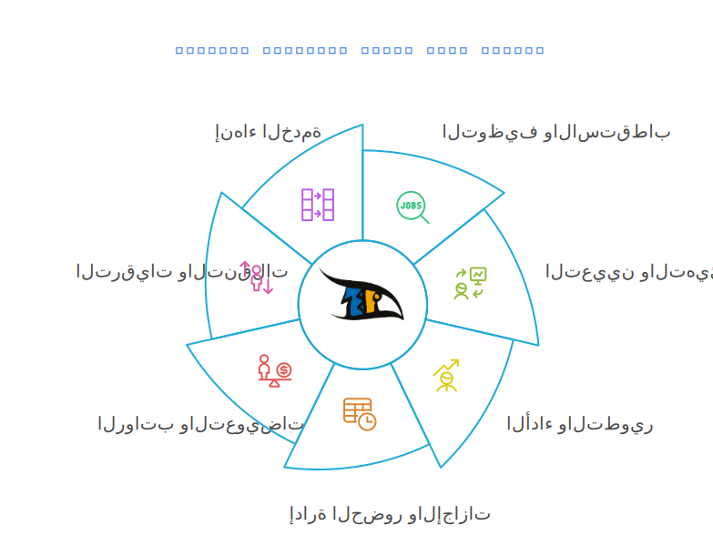
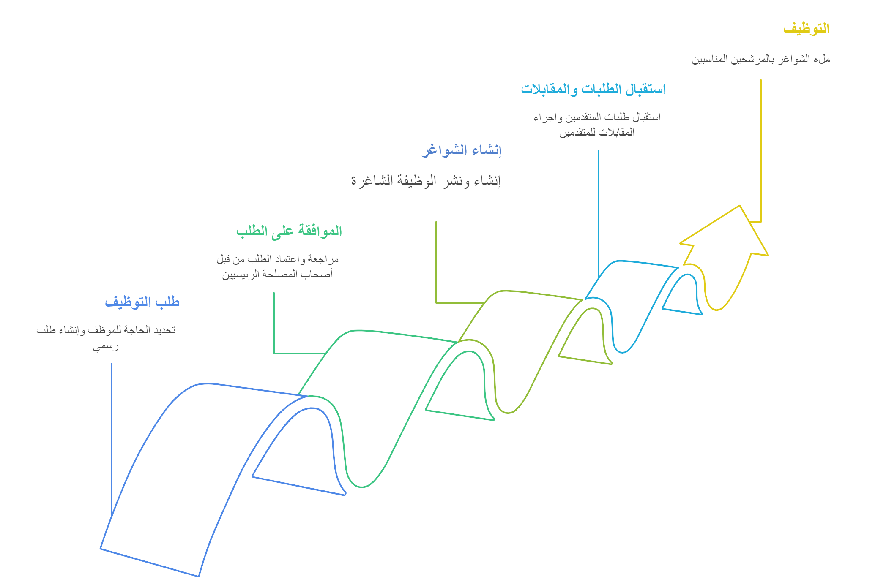
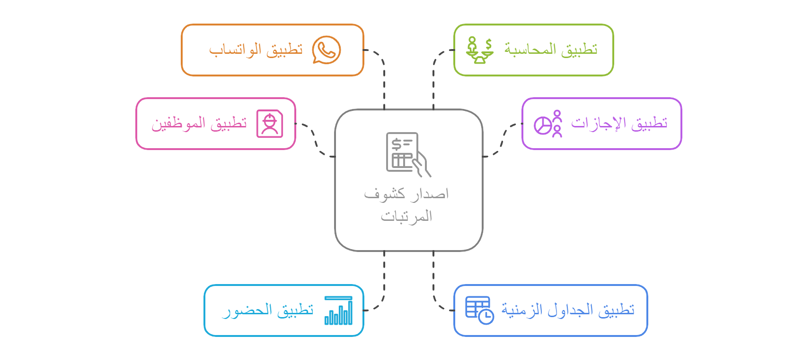

توثيق عمليات الموارد البشرية الشاملة (E2E) في نظام Odoo
الهيئة العامة للاستثمار (GIAY)
تاريخ الإعداد: 6 أبريل 2025
إعداد: مدير شئون الموظفين / مختص تطبيقات Odoo للموارد البشرية
الإصدار: 4.0
الملخص التنفيذي
تقدم هذه الوثيقة توثيقًا شاملًا ومتكاملًا (End-to-End) لعمليات الموارد البشرية في نظام Odoo كما هي مطبقة في الهيئة العامة للاستثمار (GIAY). يتجاوز هذا التوثيق حدود وحدة الموارد البشرية ليشمل تدفق العمليات والبيانات عبر الوحدات الشاملة الأخرى مثل المحاسبة (Accounting)، المخزون (Inventory)، المصروفات (Expenses)، الوقت والحضور (Time Off/Attendance)، المستخدمون والصلاحيات (Users & Permissions)، وغيرها، ضمن نظام Odoo.
توضح الوثيقة دورة حياة الموظف والعمليات المرتبطة بها، ليس كعمليات منفصلة، بل كجزء من نظام مؤسسي متكامل، مبيّنةً كيفية انتقال البيانات وتأثير الإجراءات المتخذة في وحدة الموارد البشرية على الوحدات الأخرى والعكس صحيح.
تم تصميم هذه الوثيقة لتكون مرجعًا شاملًا للمدراء التنفيذيين، فرق التدقيق، فرق التنفيذ، ومدراء الأقسام المختلفة في الهيئة، حيث توفر فهمًا عميقًا لكيفية:
تدفق عملية التوظيف من الطلب حتى تجهيز الموظف للعمل (بما في ذلك إنشاء حساب مستخدم وتخصيص أصول).
إدارة بيانات الموظف وتأثيرها على الرواتب والصلاحيات والتقارير.
تنفيذ عملية الرواتب وتكاملها التام مع النظام المحاسبي (قيود اليومية، المدفوعات).
إدارة المصروفات المتعلقة بالموظفين وتأثيرها المحاسبي.
تتبع الحضور والإجازات وانعكاسها على الرواتب وتخطيط الموارد.
إدارة أصول ومعدات الهيئة المخصصة للموظفين عبر وحدتي المخزون والأصول الثابتة.
عملية إنهاء الخدمة وتأثيرها على الرواتب النهائية، المحاسبة، استرداد الأصول، وإلغاء صلاحيات الوصول.
تأخذ الوثيقة في الاعتبار المتطلبات والتحديات الخاصة بالهيئة العامة للاستثمار، بما في ذلك التوافق مع قوانين الخدمة المدنية ، الهيكل التنظيمي الحكومي، ومتطلبات الرقابة المالية والإدارية.
كيفية استخدام هذه الوثيقة:
كل قسم يمثل عملية رئيسية تبدأ عادةً من الموارد البشرية أو الموظف.
الخطوات داخل كل قسم توضح التسلسل عبر وحدات Odoo المختلفة.
النقاط التي تبدأ بـ "التكامل:" تشير بوضوح إلى انتقال العملية أو البيانات إلى وحدة أخرى أو الاعتماد على بيانات من وحدة أخرى.
سيتم تطوير مخططات تدفق العمليات (E2E) لكل عملية رئيسية لتوفير تصور مرئي للتكامل.
جدول المحتويات
الملخص التنفيذي
جدول المحتويات
مقدمة: العمليات الشاملة(E2E) في Odoo لـ GIAY
نظرة عامة على دورة حياة الموظف في نظام Odoo
تدفق عملية التوظيف والانتساب (E2E)
إدارة بيانات الموظفين وتأثيرها الشامل (E2E)
تدفق عملية الرواتب والتعويضات (E2E)
تدفق عملية إدارة المصروفات (E2E)
تدفق عملية تقييم الأداء والتطوير (E2E)
تدفق عملية انهاء الخدمة والتقاعد (E2E)
التكامل مع وحدات أخرى (حسب الحاجة في GIAY)
التقارير والتحليلات الشاملة
التخصيصات والتعديلات الخاصة بـ GIAY
المراجع والملاحق
1. مقدمة: العمليات الشاملة (E2E) في Odoo لـ GIAY
1.1 أهمية الرؤية الشاملة للعمليات
تعتمد الهيئة العامة للاستثمار (GIAY) على نظام Odoo كنظام تخطيط موارد مؤسسي (ERP) متكامل. لا تعمل عمليات الموارد البشرية بمعزل عن باقي عمليات الهيئة. إن فهم كيفية ترابط هذه العمليات وتدفق البيانات بين الوحدات المختلفة أمر بالغ الأهمية لتحقيق الكفاءة التشغيلية، ضمان دقة البيانات، تلبية متطلبات الرقابة، واتخاذ قرارات مستنيرة.
يوفر نهج التوثيق الشامل (E2E) رؤية واضحة لكيفية تأثير القرارات والإجراءات المتخذة في قسم الموارد البشرية على الأقسام الأخرى مثل المالية والمخازن، والعكس صحيح. على سبيل المثال:
تعيين موظف جديد لا يقتصر على إنشاء سجل له، بل يتضمن إنشاء حساب مستخدم له بصلاحيات محددة، تخصيص أصول له قد تتطلب موافقات مالية أو عمليات جرد، وتحديث الهيكل المحاسبي لتكاليف الرواتب.
حساب الرواتب يعتمد على بيانات الحضور والإجازات والمصروفات، وينتج عنه قيود محاسبية تؤثر على الميزانية وتقارير التكاليف، ويتطلب عمليات دفع بنكية.
إنهاء خدمة موظف يتطلب تسوية مالية دقيقة، استرداد الأصول المخصصة له، وإلغاء صلاحيات وصوله للنظام.
1.2 الوحدات الرئيسية المتفاعلة في Odoo
تتفاعل عمليات الموارد البشرية في GIAY بشكل أساسي مع الوحدات التالية ضمن نظام Odoo:
الموارد البشرية (Human Resources Suite):
الموظفون (Employees): السجل المركزي لبيانات الموظفين.
التوظيف (Recruitment): إدارة الوظائف الشاغرة والمرشحين وعملية الاختيار.
الرواتب (Payroll): إدارة العقود، هياكل الرواتب، حساب الرواتب، وإنشاء قسائم الدفع (مع تخصيصات GIAY).
الإجازات (Time Off): إدارة طلبات الإجازات وأرصدتها.
الحضور (Attendance): تسجيل وتتبع أوقات الحضور والانصراف .
التقييمات (Appraisals): إدارة تقييمات الأداء وتحديد الأهداف.
المصروفات (Expenses): تقديم وموافقة على مصروفات الموظفين (على الرغم من أنها وحدة منفصلة، يتم ربطها بالموظف مباشرة).
المدفوعات (Payments): تسجيل دفع الرواتب والمصروفات للموظفين.
الحسابات التحليلية (Analytic Accounts): تتبع تكاليف الموظفين حسب القسم أو المشروع (ضروري لـ GIAY).
الميزانية (Budgets): مقارنة تكاليف الرواتب الفعلية بالميزانيات المعتمدة.
المخزون (Inventory) / الأصول (Assets):
المنتجات (Products): تعريف الأصول أو المعدات التي يتم تخصيصها للموظفين (مثل أجهزة الكمبيوتر المحمولة، الهواتف).
المخزون (Stock Locations/Operations): تتبع حركة هذه المعدات من المخزن الرئيسي إلى عهدة الموظف والعكس عند الاسترداد (خاصة للعناصر غير المعمرة أو المستهلكات).
الأصول الثابتة (Assets): إدارة الأصول المعمرة (مثل أجهزة الكمبيوتر، الأثاث المكتبي) المخصصة للموظفين، بما في ذلك حساب الإهلاك.
المستخدمون (Users): إنشاء وإدارة حسابات المستخدمين المرتبطة بالموظفين.
مجموعات الوصول (Access Groups): تحديد الصلاحيات الممنوحة للمستخدمين بناءً على أدوارهم الوظيفية.
المشتريات (Purchase):
قد تُستخدم لإنشاء طلبات شراء للمعدات الجديدة للموظفين أو لخدمات التدريب الخارجية.
1.3 مبادئ تدفق البيانات بين الوحدات
العلاقات (Relations): يوجد ربط مباشر بين سجل الموظف (hr.employee) وسجل المستخدم (res.users)، وكذلك بين الموظف وعقوده، قسائم رواتبه، طلبات إجازاته، مصروفاته، والأصول المخصصة له.
التشغيل التلقائي (Automation): يمكن تكوين Odoo لتشغيل إجراءات تلقائية؛ مثلاً، يمكن لطلب إجازة معتمد أن يُنشئ تلقائيًا إدخال عمل من نوع "إجازة" في وحدة الرواتب. يمكن لإنهاء عقد الموظف أن يُلغي تلقائيًا صلاحياته.
القيود المحاسبية (Accounting Entries): تقوم عمليات مثل تأكيد قسيمة الراتب أو اعتماد تقرير المصروفات بإنشاء قيود محاسبية تلقائية بناءً على إعدادات الحسابات المحددة مسبقًا في هياكل الرواتب وفئات المنتجات (للمصروفات).
الحسابات التحليلية (Analytic Accounting): يتم ربط الموظف بقسمه (الذي يمثل حسابًا تحليليًا)، مما يسمح بتوزيع تكاليف الرواتب والمصروفات تلقائيًا على المراكز التحليلية الصحيحة عند إنشاء القيود المحاسبية.
2. نظرة عامة على دورة حياة الموظف في نظام Odoo
2.1 مقدمة
دورة حياة الموظف (Employee Lifecycle) هي المسار الذي يمر به الموظف منذ لحظة التوظيف وحتى مغادرته للهيئة. يوفر نظام Odoo مجموعة متكاملة من الوحدات والأدوات التي تغطي جميع مراحل دورة حياة الموظف، مما يسمح للهيئة العامة للاستثمار بإدارة الموارد البشرية بكفاءة وفعالية.
2.2 المراحل الرئيسية لدورة حياة الموظف في نظام Odoo

1. مرحلة التوظيف والاستقطاب (Recruitment)
تبدأ دورة حياة الموظف بمرحلة التوظيف والاستقطاب، حيث يتم:
إنشاء الوظائف الشاغرة: تحديد المتطلبات والمؤهلات والمسؤوليات للوظائف المطلوبة.
نشر الإعلانات الوظيفية: إمكانية نشر الوظائف على موقع المؤسسة وبوابات التوظيف.
استقبال طلبات التوظيف: استلام السير الذاتية والطلبات عبر النظام.
تتبع المرشحين: متابعة المرشحين عبر مراحل التوظيف المختلفة (التأهيل الأولي، المقابلات، عرض العمل).
إجراء المقابلات: جدولة وتوثيق المقابلات مع المرشحين.
تقديم عروض العمل: إرسال عروض العمل للمرشحين المناسبين.
تحليل مصادر التوظيف: تقارير تحليلية لتقييم فعالية قنوات التوظيف المختلفة.
2. مرحلة التعيين والانضمام (Onboarding)
بعد قبول المرشح لعرض العمل، تبدأ مرحلة التعيين والانضمام:
إنشاء ملف الموظف: إدخال البيانات الأساسية للموظف الجديد في النظام.
خطة الانضمام: تنفيذ خطة انضمام محددة مسبقًا تتضمن سلسلة من الأنشطة عبر مختلف التطبيقات.
توقيع العقود: إرسال وتوقيع عقود العمل إلكترونيًا.
إعداد المستندات: جمع وتوثيق المستندات المطلوبة (الهوية، الشهادات، إلخ).
تخصيص المعدات: تسجيل وتخصيص المعدات والأجهزة للموظف الجديد.
التدريب التعريفي: تخصيص دورات تدريبية تعريفية للموظف الجديد.
3. مرحلة إدارة الموظفين (Employee Management)
تشمل هذه المرحلة الإدارة اليومية لشؤون الموظفين:
إدارة البيانات الشخصية: حفظ وتحديث بيانات الموظفين الشخصية والوظيفية.
إدارة الهيكل التنظيمي: تنظيم الإدارات والأقسام وتحديد التسلسل الإداري.
إدارة الحضور والانصراف: تسجيل وتتبع حضور وانصراف الموظفين.
إدارة الإجازات: معالجة طلبات الإجازات بمختلف أنواعها وتتبع أرصدة الإجازات.
إدارة المستندات: حفظ وإدارة مستندات الموظفين بشكل آمن.
إدارة المهارات والشهادات: تسجيل وتتبع مهارات وشهادات الموظفين.
4. مرحلة التعويضات والمزايا (Compensation and Benefits)
تتعلق هذه المرحلة بإدارة الرواتب والمزايا المالية للموظفين:
إدارة العقود: إنشاء وإدارة عقود العمل وتتبع حالتها.
إدارة الرواتب: احتساب وصرف الرواتب الشهرية.
إدارة البدلات والعلاوات: تحديد وإدارة البدلات والعلاوات المختلفة.
إدارة الاستقطاعات: تطبيق الاستقطاعات القانونية والأخرى.
إدارة المستحقات: حساب وصرف المستحقات المالية المختلفة.
التقارير المالية: إعداد تقارير الرواتب والتكاليف المتعلقة بالموظفين.
5. مرحلة الأداء والتطوير (Performance and Development)
تركز هذه المرحلة على تقييم وتطوير أداء الموظفين:
تقييم الأداء: إجراء تقييمات دورية لأداء الموظفين.
تقييم 360 درجة: إمكانية تنفيذ تقييم شامل من مختلف الجهات.
تحديد الأهداف: وضع ومتابعة أهداف الموظفين.
تطوير المهارات: تتبع تطور مهارات الموظفين عبر الوقت.
التدريب والتعلم: تخصيص وتتبع الدورات التدريبية للموظفين.
التخطيط الوظيفي: وضع خطط للتطوير الوظيفي والترقيات.
6. مرحلة الترقيات والتنقلات (Promotions and Transfers)
تتعلق هذه المرحلة بإدارة التغييرات في المسار الوظيفي للموظفين:
إدارة الترقيات: توثيق وتنفيذ ترقيات الموظفين.
التنقلات الداخلية: إدارة انتقال الموظفين بين الإدارات والأقسام.
تعديل العقود: تحديث عقود العمل وفقًا للتغييرات الوظيفية.
استرداد العهد: تسجيل استرداد العهد والأجهزة المخصصة للموظف.
مقابلة الخروج: توثيق أسباب المغادرة والملاحظات.
إجراءات التقاعد: تنفيذ إجراءات التقاعد وفقًا للقوانين واللوائح.
أرشفة الملفات: أرشفة ملفات الموظفين المغادرين.
2.3 تكامل دورة حياة الموظف في نظام Odoo
تتميز دورة حياة الموظف في نظام Odoo بالتكامل بين مختلف المراحل والوحدات:
التكامل بين الوحدات: تتكامل وحدات الموارد البشرية المختلفة لتوفير تجربة سلسة في إدارة دورة حياة الموظف.
الأتمتة: أتمتة العديد من العمليات مثل إرسال الإشعارات والتذكيرات وإنشاء المهام.
التتبع المستمر: تتبع تطور الموظف عبر مختلف مراحل دورة الحياة.
التقارير الشاملة: توفير تقارير وإحصائيات شاملة عن مختلف جوانب دورة حياة الموظف.
الوصول المحدد: تحديد صلاحيات الوصول لكل مستخدم بناءً على دوره في المؤسسة.
2.4 تخصيص دورة حياة الموظف للهيئة العامة للاستثمار
يمكن تخصيص دورة حياة الموظف في نظام Odoo لتتوافق مع متطلبات الهيئة العامة للاستثمار:
التوافق مع القوانين المحلية: تكييف النظام ليتوافق مع قوانين العمل والخدمة المدنية في اليمن.
هيكل الرواتب الحكومي: تخصيص نظام الرواتب ليتناسب مع سلم الرواتب الحكومي اليمني.
إجراءات التوظيف الحكومية: تعديل مسار التوظيف ليتوافق مع إجراءات التوظيف في القطاع الحكومي اليمني.
التقارير الحكومية: إنشاء تقارير خاصة تلبي متطلبات الجهات الرقابية الحكومية في اليمن.
نظام الترقيات والتنقلات: تطبيق قواعد الترقية والتنقل وفقًا للوائح الخدمة المدنية .
3. تدفق عملية التوظيف والانضمام المتكامل (E2E)

يهدف هذا التدفق إلى تتبع عملية جلب موظف جديد إلى الهيئة، بدءًا من تحديد الحاجة وحتى يصبح الموظف جاهزًا للعمل ومُدمجًا في أنظمة الهيئة.
الأدوار الرئيسية المعنية: مدير القسم الطالب، مسؤول التوظيف (HR)، مسؤول الرواتب (HR/Finance)، مسؤول تقنية المعلومات (IT)، مسؤول الأصول/المخازن (Admin/Stores).
3.1 طلبات التوظيف والموافقات
نظرة عامة على طلبات التوظيف
طلب التوظيف هو الخطوة الأولى في عملية التوظيف، حيث يتم من خلاله تحديد احتياجات المؤسسة من الموظفين الجدد. يوفر نظام Odoo وحدة متخصصة لإدارة طلبات التوظيف تسمى "Job Requisition Request"، والتي تتيح:
إنشاء وإدارة طلبات التوظيف
تتبع حالة الطلبات
تنفيذ سير عمل الموافقات على الطلبات
التعاون والتواصل بين الأطراف المعنية
عملية إنشاء طلب توظيف
إنشاء طلب التوظيف: يقوم مدير الإدارة/القسم بتحديد الحاجة لشاغر وظيفي جديد (بسبب توسع، استبدال، أو مشروع جديد). يتم إنشاء "طلب توظيف" (قد يكون عبر وحدة مخصصة أو عملية موافقة داخلية).
القسم أو الإدارة المطلوب التوظيف فيها
المسمى الوظيفي
وصف الوظيفة
سبب التوظيف (استبدال موظف، توسع في الأعمال، إلخ)
تاريخ البدء المتوقع
نطاق الراتب المقترح
تقديم الطلب للموافقة: بعد إنشاء الطلب في حالة "مسودة"، يتم تقديمه للموافقة ليتحول إلى حالة "قيد الانتظار".
مراجعة واعتماد الطلب: يقوم مسؤولو الموارد البشرية بمراجعة الطلب واتخاذ أحد الإجراءات التالية:
الموافقة على الطلب ليتحول إلى حالة "معتمد"
رفض الطلب ليتحول إلى حالة "مرفوض" مع إبداء الأسباب
إعادة الطلب للتعديل
إنشاء الوظيفة الشاغرة: بعد اعتماد طلب التوظيف، يتم إنشاء وظيفة شاغرة في نظام التوظيف.
التكامل (الميزانية/الموافقات):
يتم التحقق من وجود الشاغر في الهيكل التنظيمي المعتمد وميزانية القسم. يمر الطلب بسلسلة موافقات (قد تشمل مدير الإدارة، مدير الموارد البشرية، المدير المالي، ورئيس الهيئة) باستخدام وحدة Approvals أو عبر المراحل في وحدة Recruitment نفسها.
تخصيص عملية طلبات التوظيف للهيئة العامة للاستثمار
يمكن تخصيص عملية طلبات التوظيف في الهيئة العامة للاستثمار لتتوافق مع الهيكل التنظيمي والإجراءات الداخلية للهيئة:
مستويات الموافقة: إضافة مستويات موافقة متعددة تتناسب مع التسلسل الإداري في الهيئة (مدير الإدارة، مدير عام الموارد البشرية، رئيس الهيئة).
التكامل مع الميزانية: ربط طلبات التوظيف بالميزانية المعتمدة للهيئة والوظائف المدرجة في الهيكل التنظيمي.
التقارير: إنشاء تقارير خاصة لمتابعة طلبات التوظيف وحالتها.
المخرج: طلب توظيف معتمد.
3.2 إنشاء ونشر الوظيفة الشاغرة
إدارة الوظائف الشاغرة
بعد اعتماد طلب التوظيف، يتم إنشاء وظيفة شاغرة في نظام Odoo. تتضمن إدارة الوظائف الشاغرة:
إنشاء الوظيفة الشاغرة: يقوم مسؤول التوظيف بإنشاء "وظيفة شاغرة" (Job Position) في Odoo بناءً على الطلب المعتمد. تحديد تفاصيل الوظيفة:
المسمى الوظيفي
القسم أو الإدارة
الوصف الوظيفي
المتطلبات والمؤهلات
المسؤوليات
عدد الشواغر المطلوبة
نوع التوظيف (دائم، مؤقت، تعاقد)
نشر الوظيفة: يمكن نشر الوظيفة الشاغرة عبر:
موقع المؤسسة الإلكتروني
بوابات التوظيف الخارجية
وسائل التواصل الاجتماعي
الإعلانات الداخلية للموظفين الحاليين
تتبع الوظائف الشاغرة: متابعة حالة الوظائف الشاغرة من خلال:
عدد المتقدمين لكل وظيفة
مراحل التوظيف لكل وظيفة
الوقت المستغرق لملء الوظيفة
تكلفة التوظيف
التكامل (الموقع الإلكتروني):
يتم نشر الوظيفة على صفحة الوظائف في موقع GIAY الإلكتروني (إذا تم تفعيل التكامل مع وحدة Website). قد يتم النشر أيضًا على بوابات توظيف أخرى أو الإعلان بالطرق الرسمية المتبعة في GIAY.
تخصيص الوظائف الشاغرة للهيئة العامة للاستثمار
يمكن تخصيص إدارة الوظائف الشاغرة في الهيئة العامة للاستثمار من خلال:
التوافق مع اللوائح الحكومية: تعديل نماذج الوظائف لتتوافق مع لوائح الخدمة المدنية والتوظيف الحكومي.
قنوات النشر: تحديد قنوات النشر المناسبة للوظائف الحكومية (الصحف الرسمية، موقع الهيئة، بوابة الخدمة المدنية).
المستندات المطلوبة: تحديد المستندات الإضافية المطلوبة للتقديم على الوظائف الحكومية.
الاختبارات التحريرية: إضافة مرحلة الاختبارات التحريرية كجزء من عملية التوظيف الحكومي.
المخرج: وظيفة شاغرة منشورة، استقبال طلبات التقديم في النظام.
3.3 استقبال الطلبات، الفرز، والمقابلات
تدفق عملية التوظيف (Recruitment Flow)
يوفر نظام Odoo تدفقًا افتراضيًا لعملية التوظيف يتكون من المراحل التالية:
مرحلة جديد (New): استلام طلبات التقديم سواء عبر الإنترنت أو إدخالها يدويًا.
مرحلة التأهيل الأولي (Initial Qualification): فرز المتقدمين وتحديد المرشحين المحتملين.
مرحلة المقابلة الأولى (First Interview): إجراء المقابلة الأولى مع المرشحين المؤهلين.
مرحلة المقابلة الثانية (Second Interview): إجراء مقابلة ثانية مع المرشحين الذين اجتازوا المقابلة الأولى.
مرحلة عرض العمل (Contract Proposal): تقديم عرض العمل للمرشح المختار.
مرحلة توقيع العقد (Contract Signed): توقيع العقد وإكمال إجراءات التعيين.
إدارة المتقدمين
يتيح نظام Odoo إدارة المتقدمين للوظائف من خلال:
بطاقة المتقدم: تتضمن بطاقة المتقدم المعلومات الأساسية:
اسم المتقدم
البريد الإلكتروني
رقم الهاتف
السيرة الذاتية
ملخص الطلب
إرسال المقابلات والاستبيانات: يمكن إرسال استبيانات أو اختبارات للمتقدمين لتقييم مهاراتهم ومعرفتهم.
جدولة المقابلات: تحديد مواعيد المقابلات وإرسال الدعوات للمتقدمين.
تقييم المتقدمين: توثيق نتائج المقابلات وتقييم المتقدمين.
التواصل مع المتقدمين: إرسال رسائل البريد الإلكتروني للمتقدمين في مختلف مراحل التوظيف.
رفض المتقدمين: توثيق أسباب رفض المتقدمين وإرسال إشعارات الرفض.
الإجراء: يستقبل النظام طلبات المتقدمين. يقوم مسؤول التوظيف بفرز الطلبات ونقل المرشحين المؤهلين عبر مراحل التوظيف المحددة في Odoo (Kanban view).
التفاصيل: يتم تسجيل نتائج الفرز، جدولة المقابلات (مع إمكانية إرسال دعوات للمرشحين ومسؤولي المقابلات)، وتوثيق نتائج المقابلات والتقييمات في سجل "المتقدم" (Applicant).
تخصيص تدفق عملية التوظيف للهيئة العامة للاستثمار
يمكن تخصيص تدفق عملية التوظيف في الهيئة العامة للاستثمار من خلال:
إضافة مراحل خاصة: مثل مرحلة الاختبار التحريري، مرحلة التحقق الأمني، مرحلة الفحص الطبي.
إضافة نقاط موافقة: تحديد نقاط موافقة إضافية في العملية وفقًا للتسلسل الإداري في الهيئة.
تقارير التوظيف: إنشاء تقارير خاصة لمتابعة عملية التوظيف وفقًا لمتطلبات الهيئة.
المخرج: قائمة مختصرة بالمرشحين المناسبين.
3.4 الاختيار، عرض العمل، وإنشاء سجل الموظف
الإجراء: يتم اختيار المرشح النهائي والحصول على الموافقات اللازمة. يقوم مسؤول التوظيف بإنشاء "عرض عمل" (قد يكون عبر Odoo Sign أو مستند عادي). عند قبول المرشح للعرض، يتم تحويل سجل "المتقدم" (Applicant) إلى سجل "موظف" (Employee) جديد بنقرة زر.
التكامل (Employee): يتم نقل البيانات الأساسية (الاسم، البريد الإلكتروني، الهاتف) من سجل المتقدم إلى سجل الموظف الجديد. يجب استكمال باقي البيانات المطلوبة في سجل الموظف (الرقم الوطني، العنوان، بيانات الطوارئ، الحالة الاجتماعية، إلخ).
المخرج: سجل موظف مبدئي تم إنشاؤه في وحدة Employees.
3.5 إنشاء العقد وإعدادات الراتب الأولية
الإجراء: يقوم مسؤول الرواتب بإنشاء "عقد" (Contract) للموظف الجديد في وحدة Payroll.
التفاصيل: يتم تحديد نوع العقد، تاريخ البدء، المسمى الوظيفي، القسم، جدول العمل، وهيكل الراتب المطبق (وفقًا لدرجة الموظف وسلم الرواتب الحكومي لـ GIAY)، وتحديد الراتب الأساسي وأي بدلات ثابتة.
التكامل (Payroll Settings): يعتمد هذا على هياكل الرواتب وقواعد الحساب المعرفة مسبقًا في وحدة Payroll والتي يجب أن تعكس بدقة لوائح الخدمة المدنية والسياسات المالية لـ GIAY.
المخرج: عقد عمل نشط للموظف، جاهز لحساب الراتب.
3.6 التكامل: إنشاء حساب المستخدم وتحديد الصلاحيات
الإجراء: يتم ربط سجل الموظف (hr.employee) بسجل "مستخدم" (res.users) جديد في Odoo. قد يتم هذا تلقائيًا عند إنشاء الموظف أو يدويًا بواسطة مسؤول النظام/HR.
التفاصيل: يتم إنشاء اسم مستخدم وكلمة مرور للموظف. يقوم مسؤول النظام بتعيين الموظف إلى "مجموعات الوصول" المناسبة بناءً على مسماه الوظيفي وقسمه (مثل: موظف عادي، محاسب، مدير قسم).
التكامل (Security): تحدد هذه المجموعات الوحدات والقوائم والعمليات التي يمكن للموظف الوصول إليها وتنفيذها في نظام Odoo. يجب أن تتبع سياسة أمن معلومات صارمة.
المخرج: حساب مستخدم فعال للموظف الجديد بصلاحيات محددة.
3.7 التكامل: طلب وتخصيص المعدات والأصول
الإجراء: بناءً على دور الموظف الجديد، يتم تحديد احتياجاته من المعدات (لابتوب، هاتف، مكتب، إلخ). قد يتم هذا عبر خطة الانضمام (Onboarding Plan) أو طلب مباشر.
التفاصيل (Assets): إذا كانت المعدات أصولًا معمرة (مثل لابتوب)، يقوم مسؤول الأصول بإنشاء سجل "أصل" (Asset) جديد أو تعيين أصل موجود للموظف في وحدة Assets. يتم تسجيل الرقم التسلسلي، تاريخ الاستلام، وربط الأصل بالموظف والقسم.
التفاصيل (Inventory): إذا كانت المعدات عناصر ذات قيمة أقل أو يتم تتبعها كمخزون (مثل شاشة إضافية، فأرة)، قد يقوم مسؤول المخزن بإنشاء "إذن صرف داخلي" (Internal Transfer) في وحدة Inventory لنقل العنصر من المخزن الرئيسي إلى موقع يمثل "عهدة الموظف".
التفاصيل (Purchase): إذا كانت المعدات غير متوفرة، قد يقوم قسم المشتريات بإنشاء "طلب شراء" (Purchase Order) بناءً على طلب داخلي معتمد.
التكامل (Accounting): شراء أصول جديدة يؤدي إلى إنشاء فواتير موردين وقيود محاسبية لتسجيل الأصل وزيادة الالتزامات أو نقص النقدية. تخصيص الأصل للموظف وتحديد القسم يؤثر على تتبع الأصل وحساب الإهلاك في وحدة Assets وربطه بالمراكز التحليلية.
المخرج: تم تخصيص المعدات اللازمة للموظف الجديد وتوثيق ذلك في النظام.
3.8 التكامل: تحديث الهيكل التنظيمي والمحاسبي
الإجراء: يتم التأكد من أن الموظف الجديد تم تعيينه إلى القسم الصحيح في سجل الموظف.
التكامل (Analytic Accounting): القسم في سجل الموظف يكون عادة مرتبطًا بـ "حساب تحليلي" (Analytic Account) في وحدة Accounting. هذا يضمن أن تكاليف راتب هذا الموظف (وأي مصروفات يقدمها لاحقًا) سيتم تحميلها تلقائيًا على المركز التحليلي الصحيح (القسم) عند إنشاء قيود الرواتب والمصروفات.
المخرج: تحديث توزيع التكاليف المتوقع في النظام المحاسبي ليشمل الموظف الجديد.
3.9 خطة الانضمام والتدريب الأولي
نظرة عامة على عملية الانضمام
بعد اختيار المرشح المناسب وتوقيع العقد، تبدأ عملية انضمام الموظف الجديد إلى المؤسسة. يوفر نظام Odoo أدوات لإدارة عملية الانضمام بكفاءة:
خطط الانضمام: إنشاء خطط انضمام محددة مسبقًا تتضمن سلسلة من الأنشطة عبر مختلف التطبيقات.
إنشاء ملف الموظف: تحويل بيانات المتقدم إلى ملف موظف يتضمن:
البيانات الشخصية
بيانات التواصل
المعلومات الوظيفية
بيانات العقد
توقيع المستندات: إرسال المستندات المطلوبة للتوقيع الإلكتروني:
عقد العمل
سياسات المؤسسة
اتفاقيات السرية
نماذج الإقرارات
تخصيص المعدات: تسجيل وتخصيص المعدات والأجهزة للموظف الجديد.
التدريب التعريفي: تخصيص دورات تدريبية تعريفية للموظف الجديد.
متابعة عملية الانضمام: تتبع تقدم الموظف الجديد في عملية الانضمام.
الإجراء: يتم تفعيل "خطة انضمام" (Onboarding Plan) للموظف الجديد .
التفاصيل: تتضمن الخطة سلسلة من الأنشطة المجدولة للموظف الجديد ومديره ومسؤول الموارد البشرية (مثل: استكمال الملفات، قراءة السياسات، حضور تدريب تعريفي، لقاء الزملاء، إعداد مساحة العمل). يتم تتبع إنجاز هذه المهام في Odoo.
التكامل (HR/Sign): قد تتضمن الخطة طلب توقيع مستندات إلكترونية (سياسات، نماذج) باستخدام وحدة Sign.
تخصيص عملية الانضمام للهيئة العامة للاستثمار
يمكن تخصيص عملية الانضمام في الهيئة العامة للاستثمار من خلال:
خطط انضمام مخصصة: إنشاء خطط انضمام تتناسب مع طبيعة العمل في الهيئة.
المستندات الحكومية: إضافة المستندات الخاصة بالتوظيف الحكومي (نماذج الخدمة المدنية، إقرارات الذمة المالية).
برنامج تعريفي: تصميم برنامج تعريفي خاص بالهيئة يتضمن التعريف بالأقسام والإدارات والإجراءات الداخلية.
فترة التجربة: تحديد وإدارة فترة التجربة وفقًا للوائح الخدمة المدنية.
المخرج: إتمام عملية دمج الموظف الجديد في بيئة العمل وثقافة الهيئة.
3.10 التوصيات لتحسين عمليات التوظيف والانضمام في الهيئة العامة للاستثمار
توصيات عامة
أتمتة العمليات: أتمتة عمليات التوظيف والانضمام لتقليل الوقت والجهد وتحسين الكفاءة.
تكامل النظام: ضمان تكامل نظام التوظيف مع الأنظمة الأخرى في الهيئة (الرواتب، الحضور، التدريب).
تحسين تجربة المتقدمين: تطوير واجهة تقديم الطلبات لتكون سهلة الاستخدام وتعكس هوية الهيئة.
تطوير نماذج التقييم: إنشاء نماذج تقييم موحدة للمتقدمين لضمان الموضوعية والشفافية.
توصيات خاصة بالتوظيف
إنشاء بنك المواهب: تطوير بنك للمواهب لحفظ بيانات المتقدمين المميزين للرجوع إليهم في الوظائف المستقبلية.
تطوير برنامج الإحالات: إنشاء برنامج إحالات داخلي لتشجيع الموظفين على ترشيح مرشحين مناسبين.
تحسين عملية الفرز: استخدام الذكاء الاصطناعي لفرز السير الذاتية وتحديد المرشحين المناسبين.
تطوير المقابلات: استخدام أساليب مقابلات متنوعة (مقابلات سلوكية، مقابلات فنية، تقييمات عملية).
توصيات خاصة بالانضمام
تطوير دليل الموظف الجديد: إنشاء دليل شامل للموظفين الجدد يتضمن كل ما يحتاجون معرفته عن الهيئة.
برنامج المرشد: تطبيق نظام المرشد (Mentor) لمساعدة الموظفين الجدد على التأقلم.
متابعة دورية: إجراء متابعة دورية للموظفين الجدد خلال فترة التجربة لتقييم أدائهم وتقديم الدعم اللازم.
استبيانات التغذية الراجعة: جمع التغذية الراجعة من الموظفين الجدد لتحسين عملية الانضمام.
4. إدارة بيانات الموظفين وتأثيرها المتكامل (E2E)
تركز هذه العملية على كيفية الحفاظ على بيانات الموظفين دقيقة ومحدثة وتأثير هذه التحديثات على الوحدات الأخرى.
الأدوار الرئيسية المعنية: الموظف، مسؤول الموارد البشرية، مسؤول الرواتب، مسؤول النظام.
4.1 السجل المركزي للموظف
الإجراء: وحدة Employees هي المصدر الوحيد للحقيقة (Single Source of Truth) لجميع بيانات الموظفين الأساسية.
التفاصيل: عند تعيين موظف جديد، تكون الخطوة الأولى هي إنشاء سجل موظف جديد. يعتبر هذا السجل المكان المركزي الذي يتم فيه تخزين جميع المعلومات المهمة عن الموظف، بما في ذلك:
المعلومات الشخصية (الاسم، العنوان، الحالة الاجتماعية، معلومات الاتصال بالطوارئ)
المعلومات الوظيفية (المسمى الوظيفي، القسم، المدير المباشر، جدول العمل، تاريخ التعيين)
معلومات العمل (البريد الإلكتروني للعمل، رقم الهاتف الداخلي)
معلومات خاصة بـ GIAY (الرقم الوظيفي الحكومي، الدرجة، الفئة)
4.2 إنشاء سجلات الموظفين الجدد
نظرة عامة على سجلات الموظفين
عند تعيين موظف جديد، تكون الخطوة الأولى هي إنشاء سجل موظف جديد. يعتبر هذا السجل المكان المركزي الذي يتم فيه تخزين جميع المعلومات المهمة عن الموظف، بما في ذلك المعلومات العامة، وتاريخ العمل والمهارات، ومعلومات العمل المختلفة، والتفاصيل الشخصية، والوثائق، وغيرها.
عملية إنشاء سجل موظف جديد
فتح تطبيق الموظفين: يتم الوصول إلى تطبيق الموظفين من خلال واجهة Odoo الرئيسية.
إنشاء سجل جديد: النقر على زر "جديد" في الزاوية العلوية اليسرى، مما يؤدي إلى ظهور نموذج موظف فارغ.
إدخال المعلومات الأساسية: يتم إدخال المعلومات الأساسية المطلوبة:
اسم الموظف
الشركة (الهيئة العامة للاستثمار)
المسمى الوظيفي
القسم
المدير المباشر
الموجه (Coach)
معلومات الاتصال (البريد الإلكتروني، رقم الهاتف)
إضافة صورة الموظف: يمكن إضافة صورة للموظف من خلال النقر على أيقونة التحرير في مربع الصورة.
إضافة العلامات: يمكن إضافة علامات (Tags) للموظف لتسهيل التصنيف والبحث.
تخصيص سجلات الموظفين للهيئة العامة للاستثمار
يمكن تخصيص سجلات الموظفين في الهيئة العامة للاستثمار من خلال:
إضافة حقول خاصة: إضافة حقول خاصة بالهيئة مثل الرقم الوظيفي الحكومي، الدرجة الوظيفية، الفئة الوظيفية.
تخصيص العلامات: إنشاء علامات خاصة بالهيئة مثل "موظف دائم"، "موظف متعاقد"، "موظف مؤقت".
تخصيص المسميات الوظيفية: تعديل قائمة المسميات الوظيفية لتتوافق مع الهيكل التنظيمي للهيئة.
الإجراء: يقوم الموظف (عبر بوابة الخدمة الذاتية إن وجدت) أو مسؤول الموارد البشرية بتحديث أي تغييرات في البيانات.
أمثلة وتكاملات:
تغيير العنوان/الحالة الاجتماعية/عدد المعالين: قد يؤثر على حسابات الضرائب أو الاستقطاعات أو البدلات الاجتماعية في وحدة Payroll (حسب قواعد الرواتب المطبقة في GIAY).
تغيير المسمى الوظيفي/القسم/المدير: يؤثر على الهيكل التنظيمي، سير عمل الموافقات (مثل موافقات الإجازات والمصروفات)، وربما يؤدي إلى تغيير في هيكل الراتب (Payroll). كما قد يتطلب تحديث "مجموعات الوصول" للموظف في Settings/Users إذا تغيرت صلاحياته. ويؤثر على توزيع التكاليف في Accounting إذا انتقل إلى قسم بحساب تحليلي مختلف.
تغيير جدول العمل (دوام كامل/جزئي): يؤثر مباشرة على حساب الراتب وساعات العمل المتوقعة في Payroll و Attendance.
تحديث معلومات الاتصال (البريد الإلكتروني/الهاتف): مهم للتواصل الداخلي وإشعارات النظام.
المخرج: بيانات موظف محدثة ومنعكسة في الوحدات ذات الصلة.
4.4 إدارة المعلومات الإضافية للموظفين
السيرة الذاتية والمهارات
يوفر نظام Odoo علامة تبويب "السيرة الذاتية" في سجل الموظف، والتي تتيح:
إدارة الخبرات السابقة: توثيق تاريخ العمل السابق للموظف، بما في ذلك:
العنوان الوظيفي
نوع الخبرة (خبرة عملية، تعليم، مشاريع جانبية)
نوع العرض (كلاسيكي، شهادة، دورة)
المدة (تاريخ البدء والانتهاء)
الوصف
إدارة المهارات: توثيق مهارات الموظف، بما في ذلك:
نوع المهارة (لغات، تقنية، إدارية)
المهارة المحددة
مستوى المهارة (مبتدئ، متوسط، متقدم)
نسبة الإتقان
الشهادات والمؤهلات
يوفر نظام Odoo إمكانية إدارة شهادات ومؤهلات الموظفين من خلال:
توثيق الشهادات: تسجيل شهادات الموظف، بما في ذلك:
اسم الشهادة
نوع الشهادة (تعليم، شهادة مهنية، تدريب داخلي)
تاريخ الحصول على الشهادة
تاريخ انتهاء الصلاحية
الجهة المانحة
متابعة صلاحية الشهادات: تتبع الشهادات التي على وشك الانتهاء أو المنتهية، مع إمكانية:
عرض الشهادات حسب حالة الصلاحية (سارية، على وشك الانتهاء، منتهية)
إرسال تنبيهات للموظفين والمدراء قبل انتهاء الشهادات
تخصيص إدارة المعلومات الإضافية للهيئة العامة للاستثمار
يمكن تخصيص إدارة المعلومات الإضافية في الهيئة العامة للاستثمار من خلال:
أنواع المهارات: تحديد أنواع المهارات المطلوبة في الهيئة.
مستويات المهارات: تعريف مستويات المهارات بما يتناسب مع متطلبات الهيئة.
أنواع الشهادات: تحديد أنواع الشهادات المعترف بها في الهيئة.
التقارير المخصصة: إنشاء تقارير خاصة لمتابعة مهارات وشهادات الموظفين.
4.5 إدارة المستندات والشهادات
الإجراء: يتم تحميل وإدارة المستندات المتعلقة بالموظف (الهوية، جواز السفر، الشهادات العلمية، شهادات الخبرة، تقييمات الأداء السابقة، قرارات الجزاءات) إما مباشرة في سجل الموظف أو باستخدام وحدة Documents الشاملة.
التفاصيل: يمكن تصنيف المستندات وتحديد تواريخ انتهاء صلاحيتها (مثل جواز السفر، تصريح العمل). يمكن إعداد تنبيهات لتذكير الموظف أو مسؤول الموارد البشرية قبل انتهاء صلاحية المستند.
التكامل (Sign): يمكن استخدام Sign لإرسال وتوقيع المستندات الرسمية إلكترونيًا وأرشفتها.
المخرج: أرشيف مركزي وآمن لمستندات الموظفين.
4.6 إدارة الأقسام (تكملة)
إنشاء وإدارة الأقسام
إنشاء قسم جديد: يتم إنشاء قسم جديد من خلال:
تحديد اسم القسم
تعيين مدير القسم
تحديد القسم الأب (إن وجد)
تحديد الشركة التي ينتمي إليها القسم
اختيار لون للقسم
عرض الأقسام: يمكن عرض الأقسام بعدة طرق:
عرض كانبان (Kanban): عرض الأقسام في بطاقات منفصلة
عرض قائمة (List): عرض الأقسام في قائمة
عرض هرمي (Hierarchy): عرض الأقسام في شكل مخطط تنظيمي
إدارة الموظفين في الأقسام: يمكن عرض وإدارة الموظفين في كل قسم من خلال:
عرض عدد الموظفين في كل قسم
عرض قائمة الموظفين في القسم
نقل الموظفين بين الأقسام
تخصيص إدارة الأقسام للهيئة العامة للاستثمار
يمكن تخصيص إدارة الأقسام في الهيئة العامة للاستثمار من خلال:
هيكل الأقسام: تصميم هيكل الأقسام ليعكس الهيكل التنظيمي للهيئة.
تسميات الأقسام: استخدام التسميات الرسمية للإدارات والأقسام في الهيئة.
صلاحيات الوصول: تحديد صلاحيات الوصول لمدراء الأقسام.
تقارير الأقسام: إنشاء تقارير خاصة لمتابعة أداء الأقسام.
الإجراء: التأكد الدائم من أن حقل "القسم" (Department) في سجل الموظف محدث ويعكس موقعه الفعلي في الهيكل التنظيمي لـ GIAY.
التكامل: هذا القسم مرتبط بحساب تحليلي في Accounting. أي تكاليف مرتبطة بالموظف (رواتب، مصروفات) سيتم تلقائيًا تحميلها على هذا الحساب التحليلي، مما يسهل تحليل التكاليف حسب القسم وإعداد التقارير المالية والإدارية المطلوبة في GIAY.
المخرج: توزيع دقيق لتكاليف الموارد البشرية على المراكز الصحيحة.
4.8 التكامل: إدارة صلاحيات الوصول بناءً على الدور الوظيفي
الإجراء: عند حدوث أي تغيير في الدور الوظيفي للموظف (ترقية، نقل، تغيير مسؤوليات)، يجب مراجعة وتحديث "مجموعات الوصول" الممنوحة لحساب المستخدم المرتبط به.
التفاصيل: يقوم مسؤول النظام (بالتنسيق مع HR) بتعديل صلاحيات المستخدم لضمان حصوله على الوصول اللازم لواجباته الجديدة ومنع الوصول غير المصرح به للمعلومات أو الوظائف التي لم تعد ضمن نطاق عمله.
المخرج: صلاحيات وصول محدثة تتوافق مع الدور الوظيفي الحالي للموظف ومبدأ الحاجة للمعرفة (Need-to-know basis).
4.9 إدارة المعدات والأصول
نظرة عامة على إدارة المعدات
يتم تزويد العديد من الموظفين بمختلف العناصر لاستخدامها أثناء العمل، مثل أجهزة الكمبيوتر المحمولة والهواتف والطابعات. توفر إدارة المعدات في Odoo:
تتبع المعدات: تسجيل ومتابعة المعدات المخصصة لكل موظف.
معلومات المعدات: تخزين معلومات مهمة عن المعدات مثل الأرقام التسلسلية ومعلومات الضمان وتاريخ الصيانة.
طلبات الصيانة: إدارة طلبات صيانة المعدات.
إدارة معدات الموظفين
تخصيص المعدات للموظفين: يتم تخصيص المعدات للموظفين من خلال:
فتح سجل الموظف
النقر على زر "عدد المعدات" (Equipment Count)
إضافة معدات جديدة أو تخصيص معدات موجودة
عرض معدات الموظفين: يمكن عرض معدات الموظفين بعدة طرق:
عرض معدات موظف محدد
عرض جميع المعدات لجميع الموظفين
تنظيم المعدات حسب الموظف أو القسم
نقل المعدات: يمكن نقل المعدات بين الموظفين من خلال:
سحب وإفلات بطاقة المعدات إلى الموظف المطلوب
تعديل سجل المعدات وتغيير الموظف المخصص له
تخصيص إدارة المعدات للهيئة العامة للاستثمار
يمكن تخصيص إدارة المعدات في الهيئة العامة للاستثمار من خلال:
أنواع المعدات: تحديد أنواع المعدات المستخدمة في الهيئة.
سياسات التخصيص: تحديد سياسات تخصيص المعدات للموظفين.
إجراءات الصيانة: تحديد إجراءات صيانة المعدات.
تقارير المعدات: إنشاء تقارير خاصة لمتابعة المعدات وتوزيعها.
4.10 التوصيات لتحسين إدارة بيانات الموظفين في الهيئة العامة للاستثمار
توصيات عامة
توحيد البيانات: توحيد طريقة إدخال البيانات وتنسيقها لضمان الاتساق والدقة.
أتمتة العمليات: أتمتة عمليات إدارة بيانات الموظفين لتقليل الأخطاء وتوفير الوقت والجهد.
تكامل النظام: ضمان تكامل نظام إدارة بيانات الموظفين مع الأنظمة الأخرى في الهيئة.
تدريب المستخدمين: تدريب المستخدمين على استخدام النظام بشكل صحيح وفعال.
توصيات خاصة بإدارة سجلات الموظفين
إنشاء قوالب موحدة: إنشاء قوالب موحدة لإدخال بيانات الموظفين لضمان اكتمال ودقة البيانات.
تحديث دوري للبيانات: وضع جدول زمني لتحديث بيانات الموظفين بشكل دوري.
التحقق من البيانات: تطبيق آليات للتحقق من صحة البيانات المدخلة.
حماية البيانات: تطبيق إجراءات لحماية بيانات الموظفين وضمان سريتها.
توصيات خاصة بإدارة الأقسام والمعدات
مراجعة دورية للهيكل التنظيمي: مراجعة وتحديث الهيكل التنظيمي بشكل دوري.
تحسين إدارة المعدات: تطبيق نظام لتتبع المعدات وصيانتها بشكل فعال.
تقارير تحليلية: إنشاء تقارير تحليلية لمساعدة المدراء في اتخاذ القرارات.
تخطيط الموارد: استخدام بيانات الموظفين والأقسام لتخطيط الموارد بشكل أفضل.
5. تدفق عملية الرواتب والتعويضات المتكامل (E2E)
يهدف هذا التدفق إلى تتبع عملية حساب ودفع رواتب الموظفين الشهرية بدقة وفي الوقت المحدد، مع ضمان التكامل التام مع النظام المحاسبي والوحدات الأخرى ذات الصلة.
الأدوار الرئيسية المعنية: مسؤول الرواتب (HR/Finance)، الموظف، المدير المباشر (لاعتماد بعض المدخلات مثل الوقت الإضافي)، مسؤول المحاسبة، مسؤول المالية (للمدفوعات).

5.1 إعداد هياكل الرواتب وقواعد الحساب
نظرة عامة على إعدادات الرواتب
يتم تكوين تطبيق الرواتب في نظام Odoo من خلال الانتقال إلى تطبيق الرواتب ‣ الإعدادات ‣ الإعدادات. تتضمن إعدادات الرواتب عدة أقسام رئيسية:
قيود الرواتب: لتمكين ترحيل قسائم الرواتب في المحاسبة
مدفوعات SEPA: لإنشاء مدفوعات SEPA
تجميع قيود المحاسبة: لإنشاء قيد محاسبي واحد من جميع القيود المحاسبية من نفس الفترة
التوطين: إعدادات خاصة بالدولة مكونة مسبقًا في Odoo عند إنشاء قاعدة البيانات، والتي تأخذ في الاعتبار جميع الضرائب والرسوم والبدلات لتلك الدولة المحددة.
الإجازات:
الإجازات المؤجلة: إذا تم أخذ إجازة بعد التحقق من صحة قسائم الرواتب، يجب تطبيق الإجازة على فترة الدفع التالية.
الرواتب:
فترة إشعار انتهاء العقد: عدد الأيام قبل انتهاء العقد، ويقوم Odoo بإخطار الشخص المسؤول عن الانتهاء الوشيك في ذلك الوقت.
فترة إشعار انتهاء تصريح العمل: عدد الأيام قبل انتهاء تصريح العمل، ويقوم Odoo بإخطار الشخص المسؤول عن الانتهاء الوشيك في ذلك الوقت.
عرض PDF لقسيمة الراتب: لتمكين عرض PDF لقسيمة الراتب عندما تكون الحالة مصدقة.
الإجراء: (يتم مرة واحدة ويُراجع دوريًا) يقوم مسؤول الرواتب بالتعاون مع المالية بتعريف "هياكل الرواتب" (Salary Structures) لكل فئة/درجة وظيفية في GIAY. يتضمن ذلك تعريف "قواعد الراتب" (Salary Rules) لكل مكون (راتب أساسي، بدلات حكومية متنوعة مثل بدل انتقال، بدل سكن، بدل طبيعة عمل، علاوات دورية، استقطاعات الضمان الاجتماعي، ضرائب الدخل - وفقًا للقانون اليمني).
التكامل (Accounting Config): يتم ربط كل قاعدة راتب (خاصة المصروفات والالتزامات) بالحسابات المحاسبية المقابلة في Accounting (مثل حساب مصروف الرواتب، حساب التزام الضمان الاجتماعي، حساب التزام ضريبة الدخل).
تخصيص إعدادات الرواتب للهيئة العامة للاستثمار
يمكن تخصيص إعدادات الرواتب في الهيئة العامة للاستثمار من خلال:
التوطين: تكييف إعدادات التوطين لتتوافق مع قوانين العمل والضرائب اليمنية.
الحسابات المحاسبية: تعديل الحسابات المحاسبية لتتوافق مع النظام المحاسبي للهيئة.
فترات الإشعار: تعديل فترات الإشعار لتتوافق مع سياسات الهيئة والقوانين اليمنية.
نماذج قسائم الرواتب: تخصيص نماذج قسائم الرواتب لتتضمن شعار الهيئة والمعلومات الخاصة بها.
لكي يتم دفع راتب للموظف، يجب أن يكون لديه عقد نشط لنوع محدد من التوظيف. يوفر نظام Odoo إمكانية إنشاء وإدارة قوالب العقود وأنواع التوظيف.
قوالب العقود
تُستخدم قوالب العقود عند إرسال عرض إلى مرشح. يشكل قالب العقد أساس العرض، ويمكن تعديله للمرشحين أو الموظفين المحددين عند الضرورة.
لإنشاء قالب عقد جديد، يتم إدخال المعلومات التالية:
مرجع العقد: وصف موجز للقالب، يجب أن يكون واضحًا ومفهومًا بسهولة.
جدول العمل: اختيار جدول العمل المطلوب الذي ينطبق عليه العقد.
مصدر إدخال العمل: اختيار كيفية إنشاء إدخالات العمل (جدول العمل، الحضور، التخطيط).
نوع هيكل الراتب: اختيار نوع هيكل الراتب من القائمة المنسدلة.
القسم: اختيار القسم الذي ينطبق عليه قالب العقد.
المسمى الوظيفي: اختيار المسمى الوظيفي الذي ينطبق عليه قالب العقد.
الأجر في كشف الرواتب: إدخال الأجر الشهري في الحقل.
نوع العقد: اختيار نوع العقد من القائمة المنسدلة.
مسؤول الموارد البشرية: اختيار الموظف المسؤول عن التحقق من صحة العقود.
قالب مستند العقد الجديد: اختيار مستند افتراضي يجب على الموظف الجديد توقيعه لقبول العرض.
قالب مستند تحديث العقد: اختيار مستند افتراضي يجب على الموظف الحالي توقيعه لتحديث عقده.
معلومات الراتب
تتضمن علامة تبويب معلومات الراتب في قالب العقد:
نوع الأجر: اختيار إما أجر ثابت أو أجر بالساعة.
جدول الدفع: اختيار عدد مرات دفع الراتب للموظف (سنويًا، نصف سنوي، ربع سنوي، شهريًا، نصف شهري، كل أسبوعين، أسبوعيًا، يوميًا).
الأجر: إدخال الأجر الإجمالي، ويتم تحديث الفترة الزمنية المعروضة في هذا الحقل بناءً على ما تم اختياره في حقل جدول الدفع.
التكلفة السنوية (الحقيقية): إدخال إجمالي التكلفة السنوية التي يكلف الموظف صاحب العمل.
التكلفة الشهرية (الحقيقية): هذا الحقل غير قابل للتعديل، ويتم تعبئته تلقائيًا بعد إدخال التكلفة السنوية.
المزايا قبل الضريبة والخصومات بعد الضريبة
اعتمادًا على إعدادات التوطين المحددة للشركة، قد تختلف الإدخالات المعروضة في هذا القسم أو قد لا تظهر على الإطلاق. على سبيل المثال، قد تتعلق بعض الإدخالات بحسابات التقاعد، ومزايا التأمين الصحي، ومزايا المواصلات.
يتم إدخال المبالغ النقدية أو النسب المئوية لتحديد مقدار راتب الموظف الذي يذهب إلى المزايا و/أو الخصومات المختلفة.
أنواع التوظيف
يتم عرض أنواع التوظيف المكونة مسبقًا في قائمة. أنواع التوظيف الافتراضية هي: - دائم - مؤقت - موسمي - متدرب - دوام كامل - دوام جزئي - دائم
يمكن إنشاء نوع توظيف جديد من خلال النقر على زر "جديد" في الزاوية العلوية اليسرى، وإدخال اسم نوع التوظيف في عمود "الاسم". إذا كان نوع التوظيف خاصًا بدولة معينة، يتم اختيار الدولة باستخدام القائمة المنسدلة في عمود "الدولة".
تخصيص إدارة العقود للهيئة العامة للاستثمار
يمكن تخصيص إدارة العقود في الهيئة العامة للاستثمار من خلال:
قوالب العقود: إنشاء قوالب عقود تتوافق مع سياسات الهيئة والقوانين اليمنية.
أنواع التوظيف: تعديل أنواع التوظيف لتتوافق مع تصنيفات الوظائف في الهيئة.
هياكل الرواتب: إنشاء هياكل رواتب تعكس نظام الرواتب في الهيئة.
المزايا والخصومات: تكوين المزايا والخصومات وفقًا للوائح الهيئة والقوانين اليمنية.
5.3 التكامل: جمع بيانات إدخالات العمل
نظرة عامة على إدخالات العمل
إدخالات العمل هي السجلات التي تتتبع وقت عمل الموظف، وتستخدم لحساب الرواتب. يمكن إنشاء إدخالات العمل بناءً على:
جدول العمل: يتم إنشاء إدخالات العمل بناءً على جدول العمل المحدد.
الحضور: يتم إنشاء إدخالات العمل بناءً على حضور الموظف، كما هو مسجل في تطبيق الحضور.
التخطيط: يتم إنشاء إدخالات العمل بناءً على تخطيط الموظف في تطبيق التخطيط.
الإجراء: قبل نهاية فترة الدفع، يقوم نظام الرواتب بجمع البيانات المتغيرة التي تؤثر على حساب الراتب.
التكامل (Time Off): يتم سحب سجلات "الإجازات المعتمدة" (Approved Time Off) من وحدة Time Off تلقائيًا. يتم تحويل أنواع الإجازات المختلفة (مرضية، سنوية، بدون أجر) إلى إدخالات عمل مقابلة في Payroll تؤثر على عدد أيام العمل الفعلية أو قد تؤدي لخصومات.
التكامل (Attendance/Timesheets): تستخدم وحدة Attendance لتسجيل الحضور والانصراف أو Timesheets لتسجيل ساعات العمل على مشاريع/مهام، يتم سحب هذه البيانات لحساب ساعات العمل الإضافي أو الخصومات للتأخير/الغياب (حسب السياسات المطبقة وقواعد الرواتب). قد يتطلب هذا اعتمادًا من المدير المباشر لساعات العمل الإضافي.
إنشاء وإدارة إدخالات العمل
يمكن إنشاء وإدارة إدخالات العمل من خلال:
إنشاء إدخالات العمل: يتم إنشاء إدخالات العمل تلقائيًا بناءً على المصدر المحدد في العقد.
التحقق من إدخالات العمل: يتم التحقق من إدخالات العمل للتأكد من صحتها قبل إنشاء قسائم الرواتب.
تعديل إدخالات العمل: يمكن تعديل إدخالات العمل يدويًا إذا لزم الأمر.
تخصيص إدارة إدخالات العمل للهيئة العامة للاستثمار
يمكن تخصيص إدارة إدخالات العمل في الهيئة العامة للاستثمار من خلال:
مصادر إدخالات العمل: اختيار مصدر إدخالات العمل المناسب لكل نوع من أنواع الوظائف.
أنواع إدخالات العمل: تكوين أنواع إدخالات العمل لتعكس أنماط العمل في الهيئة.
قواعد التحقق: تعديل قواعد التحقق من إدخالات العمل لتتوافق مع سياسات الهيئة.
المخرج: سجل "إدخالات العمل" (Work Entries) للموظف للفترة الحالية، يعكس أيام العمل الفعلية، الإجازات، والعمل الإضافي (إن وجد).
5.4 التكامل: معالجة البدلات والاستقطاعات الإضافية
الإجراء: يتم إدخال أي بدلات أو استقطاعات غير متكررة أو غير مرتبطة مباشرة بإدخالات العمل.
التكامل (Expenses): إذا كانت هناك مصروفات مستردة للموظف يجب دفعها مع الراتب (بدلاً من دفعها بشكل منفصل)، يمكن إضافتها كـ "مدخلات أخرى" (Other Inputs) في قسيمة الراتب. (الطريقة الأفضل غالبًا هي دفع المصروفات بشكل منفصل عبر عملية المصروفات).
التكامل (Loans/Deductions): لإدارة سلف الموظفين أو استقطاعات أخرى (مثل أقساط لسلفة سابقة، جزاءات مالية)، يتم إدخال هذه المبالغ كـ "مدخلات أخرى" في قسيمة الراتب للفترة الحالية، بناءً على جدول السداد أو قرار الجزاء. (قد تتطلب وحدة قروض مخصصة أو إدارة يدوية).
المخرج: تحديث "المدخلات الأخرى" في قسيمة الراتب لتشمل جميع العناصر الإضافية المؤثرة.
5.5 إنشاء وحساب قسائم الرواتب
نظرة عامة على قسائم الرواتب
يتم إنشاء قسائم الرواتب من قبل مسؤولي الرواتب من خلال تطبيق الرواتب. يتكون القائمة المنسدلة لقسائم الرواتب من ثلاثة أقسام:
للدفع: لعرض قسائم الرواتب التي تحتاج إلى دفع.
جميع قسائم الرواتب: لعرض جميع قسائم الرواتب.
الدفعات: لإدارة دفعات الرواتب.
الإجراء: يقوم مسؤول الرواتب بإنشاء "دفعة قسائم رواتب" (Payslip Batch) للفترة الحالية (مثلاً، راتب شهر أبريل 2025). يقوم النظام بإنشاء قسائم رواتب فردية (Draft Payslips) لكل موظف نشط لديه عقد ساري.
التفاصيل: يقوم مسؤول الرواتب بالنقر على "حساب القسيمة" (Compute Sheet) لكل موظف أو للدفعة بأكملها. يقوم النظام بتطبيق هيكل الراتب وقواعده على إدخالات العمل والمدخلات الأخرى لحساب جميع مكونات الراتب (الإجمالي، الاستقطاعات، الصافي).
إنشاء قسيمة راتب جديدة
يمكن إنشاء قسيمة راتب جديدة من خلال:
اختيار الموظف: اختيار الموظف من القائمة المنسدلة.
تحديد الفترة: تحديد فترة الراتب (من تاريخ إلى تاريخ).
اختيار العقد: اختيار العقد المناسب للموظف.
اختيار الدفعة: اختيار دفعة قسائم الرواتب التي يجب إضافة قسيمة الراتب الجديدة إليها.
اختيار الهيكل: اختيار نوع هيكل الراتب.
معالجة قسيمة الراتب
بعد إدخال جميع المعلومات اللازمة في قسيمة الراتب، يتم اتباع الخطوات التالية:
حساب القسيمة: النقر على زر "حساب القسيمة" لحساب الراتب بناءً على المعلومات المدخلة.
إنشاء قيد مسودة: النقر على زر "إنشاء قيد مسودة" لإنشاء قسيمة الراتب.
تسجيل الدفع: النقر على زر "تسجيل الدفع" لتسجيل دفع الراتب للموظف.
تخصيص إدارة قسائم الرواتب للهيئة العامة للاستثمار
يمكن تخصيص إدارة قسائم الرواتب في الهيئة العامة للاستثمار من خلال:
نماذج قسائم الرواتب: تخصيص نماذج قسائم الرواتب لتتضمن شعار الهيئة والمعلومات الخاصة بها.
دورة الرواتب: تكوين دورة الرواتب لتتوافق مع سياسات الهيئة.
قواعد الحساب: تعديل قواعد حساب الرواتب لتتوافق مع القوانين اليمنية.
التقارير: إنشاء تقارير مخصصة للرواتب تلبي احتياجات الهيئة.
المخرج: قسائم رواتب محسوبة في حالة "مسودة" (Draft).
5.6 مراجعة واعتماد قسائم الرواتب
الإجراء: يقوم مسؤول الرواتب بمراجعة القسائم المحسوبة للتحقق من دقتها. قد يتم تصدير تقرير مراجعة (Payroll Register Report) لمراجعته من قبل مسؤول آخر أو المدير المالي.
التفاصيل: بعد التأكد من صحة الحسابات، يتم تأكيد قسائم الرواتب (Confirm).
الإجراء: بعد تأكيد قسائم الرواتب في الدفعة، يقوم مسؤول الرواتب (أو المحاسب) بتشغيل إجراء "إنشاء قيد محاسبي" (Create Journal Entry) للدفعة.
التكامل (Accounting): يقوم Odoo تلقائيًا بإنشاء قيد يومية مجمع (أو قيود فردية حسب الإعداد) في دفتر يومية الرواتب المحدد.
تفصيل الحسابات:
يتضمن القيد:
مدين: حسابات مصروفات الرواتب والبدلات المختلفة.
دائن: حسابات التزامات الموظفين (صافي الراتب المستحق)، التزام الضمان الاجتماعي، التزام ضريبة الدخل، التزامات أخرى (مثل السلف).
ربط بالمراكز التحليلية:
يتم تلقائيًا توزيع مبالغ المصروفات (الجانب المدين) على "الحسابات التحليلية" المقابلة لأقسام الموظفين، مما يسمح بتحليل دقيق لتكلفة كل قسم.
المخرج: قيد يومية مسجل في النظام المحاسبي (عادة في حالة "غير مرحل" أو "Draft" للمراجعة النهائية من المحاسبة). يقوم المحاسب بمراجعته وترحيله (Post).
5.8 التكامل: إنشاء دفعة المدفوعات
الإجراء: بعد ترحيل قيد الرواتب، يقوم مسؤول المالية بإنشاء "دفعة مدفوعات" (Batch Payment) في Accounting.
التفاصيل: يتم تحديد حساب البنك الخاص بالهيئة، وطريقة الدفع (تحويل بنكي). يقوم النظام بسحب بيانات الموظفين المستحقين ومبالغ صافي الراتب المستحقة من قيود الرواتب أو قسائم الدفع.
التكامل (Banking): يمكن لـ Odoo إنشاء ملف دفع متوافق مع نظام البنك (مثل ملف SEPA أو تنسيق محلي آخر). يتم تحميل هذا الملف إلى بوابة البنك الإلكترونية لتنفيذ التحويلات. بعد تأكيد البنك للدفع، يتم تسجيل الدفعات في Odoo لتسوية التزامات الموظفين.
المخرج: تم إنشاء أمر الدفع، (اختياريًا) تم إنشاء ملف الدفع للبنك، وتم تسجيل المدفوعات في النظام المحاسبي عند اكتمالها.
5.9 التكامل: تحديث تقارير التكاليف والميزانية
الإجراء: ترحيل قيد الرواتب وتسجيل المدفوعات يؤدي إلى تحديث التقارير المحاسبية تلقائيًا.
التكامل (Reporting): يتم تحديث تقارير مثل:
ميزان المراجعة (Trial Balance): تظهر أرصدة حسابات الرواتب والالتزامات.
قائمة الدخل (Profit and Loss): يظهر مصروف الرواتب.
تقارير الحسابات التحليلية (Analytic Reports): تظهر تكلفة الرواتب موزعة حسب القسم/المركز التحليلي.
تقارير الميزانية (Budget Reports): تتم مقارنة مصروفات الرواتب الفعلية بالميزانية المعتمدة لكل قسم.
مراجعة دورية للعقود: إجراء مراجعة دورية للعقود للتأكد من توافقها مع القوانين واللوائح المتغيرة.
أتمتة تجديد العقود: أتمتة عملية تجديد العقود لضمان عدم انتهاء صلاحية العقود دون إشعار.
تحسين إدارة الموافقات: تحسين عملية الموافقة على العقود لتسريع العملية وضمان الامتثال.
توصيات خاصة بإدارة قسائم الرواتب
تحسين دقة البيانات: ضمان دقة البيانات المستخدمة في حساب الرواتب.
أتمتة التحقق: أتمتة عملية التحقق من قسائم الرواتب لتقليل الأخطاء.
تحسين التوثيق: تحسين توثيق عمليات الرواتب لضمان الشفافية والامتثال.
تطوير التقارير: تطوير تقارير مخصصة للرواتب تلبي احتياجات الهيئة.
توصيات خاصة بإدارة المزايا والتعويضات
مراجعة حزم المزايا: مراجعة حزم المزايا بشكل دوري للتأكد من تنافسيتها.
تحسين التواصل: تحسين التواصل مع الموظفين حول المزايا المتاحة لهم.
تطوير برامج المكافآت: تطوير برامج مكافآت فعالة لتحفيز الموظفين.
قياس فعالية المزايا: قياس فعالية برامج المزايا والتعويضات وتعديلها بناءً على النتائج.
6. تدفق عملية إدارة المصروفات المتكامل (E2E)
يهدف هذا التدفق إلى تتبع عملية تقديم الموظفين لطلبات استرداد المصروفات المتعلقة بالعمل، والحصول على الموافقات اللازمة، ومعالجتها محاسبيًا، وسدادها للموظف.
الأدوار الرئيسية المعنية: الموظف، المدير المباشر، مسؤول المحاسبة/التدقيق، مسؤول المالية (للمدفوعات).
6.1 تقديم طلب المصروف من الموظف
الإجراء: يقوم الموظف بإنشاء "تقرير مصروفات" (Expense Report) جديد في وحدة Expenses.
التفاصيل: يختار الموظف "منتج المصروف" (Expense Product) المناسب (مثل: بدل سفر، ضيافة، مشتريات بسيطة)، يدخل المبلغ، التاريخ، ويضيف وصفًا. يجب إرفاق نسخة من الفاتورة أو الإيصال كدليل.
التكامل (Analytic): يمكن للموظف (أو يتم تعيينه تلقائيًا بناءً على قسمه) تحديد "حساب تحليلي" إذا كان المصروف مرتبطًا بقسم أو مشروع معين.
المخرج: تقرير مصروفات في حالة "مسودة" (Draft). يقدمه الموظف للموافقة (Submit to Manager).
6.2 موافقة المدير المباشر/المسؤول
الإجراء: يتلقى المدير المباشر (المحدد في سجل الموظف) إشعارًا بوجود تقرير مصروفات للموافقة عليه.
التفاصيل: يقوم المدير بمراجعة المصروف، التحقق من الإيصال المرفق، والتأكد من مطابقته لسياسات الهيئة. يقوم المدير بـ "الموافقة" (Approve) أو "الرفض" (Refuse) مع ذكر السبب.
المخرج: تقرير مصروفات في حالة "معتمد من المدير" (Approved) أو "مرفوض" (Refused).
6.3 التكامل: مراجعة واعتماد قسم المحاسبة
الإجراء: بعد موافقة المدير، يصل تقرير المصروفات إلى قسم المحاسبة للمراجعة النهائية والتدقيق.
التفاصيل: يقوم المحاسب بالتحقق من صحة الحسابات، اكتمال المستندات، الامتثال للسياسات المالية والضريبية. يتأكد من أن "منتج المصروف" المحدد سيرحل إلى الحساب المحاسبي الصحيح.
المخرج: تقرير مصروفات جاهز للترحيل المحاسبي.
6.4 التكامل: إنشاء فاتورة مورد (Vendor Bill) للموظف أو قيد مباشر
الإجراء: يقوم المحاسب بتشغيل إجراء "إنشاء قيد محاسبي" (Post Journal Entries).
التكامل (Accounting): يقوم Odoo بإنشاء:
إما فاتورة مورد (Vendor Bill): حيث يُعامل الموظف كمورد مؤقت. تكون الفاتورة باسم الموظف، وتحتوي على تفاصيل المصروفات، وتؤدي إلى زيادة حساب "الموردين" (Account Payable) للموظف وزيادة حساب "مصروفات" المقابل. (هذه الطريقة شائعة وتسهل عملية الدفع).
أو قيد يومية مباشر: يزيد حساب المصروف ويزيد حساب التزام مباشر للموظف (مثل حساب مصروفات مستحقة الدفع للموظفين).
التفاصيل المحاسبية: يتم تحميل المصروف على الحساب المحاسبي المحدد في "منتج المصروف" ويتم ربطه بالحساب التحليلي المحدد.
المخرج: قيد محاسبي مرحل (أو فاتورة مورد مؤكدة ومرحلة) في النظام المحاسبي، يثبت استحقاق المبلغ للموظف.
6.5 التكامل: تسجيل الدفعة للموظف
الإجراء: يقوم مسؤول المالية بتضمين المبالغ المستحقة للموظفين من فواتير المصروفات في دفعة المدفوعات التالية (قد تكون دفعة منفصلة عن الرواتب أو مدمجة حسب سياسة GIAY).
التفاصيل: يتم اختيار فاتورة المورد (الموظف) أو القيد المستحق للدفع، وتحديد حساب البنك، وإنشاء دفعة المدفوعات.
التكامل (Banking): كما في عملية الرواتب، يمكن إنشاء ملف دفع للبنك وتسجيل الدفع في Odoo عند اكتماله، مما يخفض رصيد البنك ويسوي التزام الموظف (حساب الموردين أو حساب الالتزام الآخر).
المخرج: تم سداد المبلغ للموظف، وتم تحديث السجلات المحاسبية.
6.6 التكامل: تأثير المصروفات على تقارير التكلفة
الإجراء: ترحيل قيود المصروفات يؤثر تلقائيًا على التقارير المالية.
التكامل (Reporting): يتم تحديث التقارير مثل:
قائمة الدخل: تظهر مصروفات السفر والضيافة وغيرها.
تقارير الحسابات التحليلية: تظهر تكلفة المصروفات موزعة حسب القسم/المشروع الذي تم تحميل المصروف عليه.
تقارير الميزانية: تتم مقارنة المصروفات الفعلية بالميزانية المعتمدة.
المخرج: رؤية واضحة لتكاليف المصروفات وتوزيعها داخل الهيئة.
7. تدفق عملية تقييم الأداء والتطوير المتكامل (E2E)
يهدف هذا التدفق إلى تتبع عملية تقييم أداء الموظفين بشكل دوري، تحديد الأهداف المستقبلية، وربط نتائج التقييم بخطط التطوير والقرارات الإدارية الأخرى.
الأدوار الرئيسية المعنية: الموظف، المدير المباشر، مسؤول الموارد البشرية (HR).
7.1 تخطيط وتنفيذ التقييمات
نظرة عامة على إعدادات تقييم الأداء
يتم تكوين تطبيق التقييمات في نظام Odoo من خلال الانتقال إلى تطبيق التقييمات ‣ الإعدادات ‣ الإعدادات. تتضمن إعدادات التقييمات عدة أقسام رئيسية:
قوالب التقييم: قوالب التقييم هي مخططات النماذج المستخدمة أثناء تقييم الموظف. يتم عكس أي تعديلات تتم على القالب في نهاية المطاف في التقييمات المرسلة إلى الموظفين.
خطط التقييمات: يتم تكوين التقييمات بشكل افتراضي ليتم إنشاؤها تلقائيًا بعد ستة أشهر من تعيين الموظف، مع تقييم ثانٍ بعد ستة أشهر بالضبط من ذلك. بعد اكتمال هذين التقييمين الأوليين في السنة الأولى للموظف، يتم إنشاء التقييمات التالية مرة واحدة فقط في السنة (كل اثني عشر شهرًا).
تقييم 360 درجة: يمكن تمكين خيار تقييم 360 درجة للسماح للمدراء بطلب تقييم من موظفين آخرين باستخدام نموذج استبيان مختلف، في أي وقت، بشكل مستقل عن جدول التقييم.
مقياس التقييم: على كل نموذج تقييم للموظف، تظهر خيارات التقييم النهائي بشكل افتراضي. التقييمات المكونة مسبقًا هي "يحتاج إلى تحسين"، "يلبي التوقعات"، "يتجاوز التوقعات"، و"يتجاوز التوقعات بشكل كبير".
الإجراء: يقوم مسؤول الموارد البشرية بإعداد "خطط التقييم" (Appraisal Plans) التي تحدد وتيرة التقييمات (سنوية، نصف سنوية) وتاريخ استحقاقها لكل موظف أو مجموعة موظفين (مثل تقييمات ما بعد فترة التجربة، تقييمات نهاية العام). يمكن للنظام إنشاء طلبات التقييم تلقائيًا بناءً على هذه الخطط.
التفاصيل: يتم إنشاء "تقييم" (Appraisal) لكل موظف في الموعد المحدد. يتلقى الموظف ومديره إشعارًا ببدء عملية التقييم. يستخدم التقييم قالبًا محددًا مسبقًا (Appraisal Template) يتضمن محاور التقييم (الكفاءات، الأهداف السابقة، المسؤوليات) ومقاييس التقييم المعتمدة في GIAY.
تخصيص إعدادات تقييم الأداء للهيئة العامة للاستثمار
يمكن تخصيص إعدادات تقييم الأداء في الهيئة العامة للاستثمار من خلال:
قوالب التقييم: تعديل قوالب التقييم لتتضمن أسئلة وأقسام تتناسب مع طبيعة عمل الهيئة.
خطط التقييمات: تعديل جدول التقييمات ليتوافق مع سياسات الهيئة.
تقييم 360 درجة: تخصيص استبيان تقييم 360 درجة ليتضمن أسئلة تتناسب مع طبيعة عمل الهيئة.
المخرج: تقييمات مجدولة أو قيد التنفيذ للموظفين.
7.2 إكمال التقييم الذاتي وتقييم المدير
نظرة عامة على التقييمات
يتم عرض جميع التقييمات على لوحة المعلومات في عرض كانبان افتراضي، مع قائمة من التجميعات على الجانب الأيسر من لوحة المعلومات، بما في ذلك الشركة، القسم، والحالة.
تعرض كل بطاقة تقييم المعلومات التالية:
الاسم: اسم الموظف.
القسم: القسم الذي يرتبط به الموظف.
الشركة: الشركة التي يعمل بها الموظف.
التاريخ: تاريخ طلب التقييم، أو المجدول له في المستقبل.
الأنشطة: أي أنشطة مجدولة للتقييم، مثل الاجتماعات أو المكالمات الهاتفية.
المدير: مدير الموظف، المشار إليه برمز الملف الشخصي في الزاوية السفلية اليمنى من بطاقة التقييم.
شريط الحالة: حالة التقييم. يظهر شريط إذا تم تمييز التقييم على أنه "ملغي" أو "تم". إذا لم يكن هناك شريط، فهذا يعني أن التقييم لم يحدث، أو لم يتم جدولته بعد.
الإجراء: يقوم الموظف بملء جزء "التقييم الذاتي" (Employee Feedback) في نموذج التقييم. بعد ذلك، يقوم المدير المباشر بملء جزء "تقييم المدير" (Manager Feedback).
التفاصيل: يتم تقييم الأداء بناءً على المحاور المحددة. يتم عقد اجتماع بين الموظف والمدير لمناقشة التقييم. يتم توثيق نتائج الاجتماع والملاحظات النهائية في التقييم.
(اختياري - 360 Feedback): يمكن للمدير طلب "تقييم 360 درجة" من زملاء آخرين أو مرؤوسين (غير مستخدمة في GIAY) لجمع رؤى إضافية.
إنشاء تقييم جديد
لإنشاء تقييم جديد، يتم النقر على زر "جديد" في الزاوية العلوية اليسرى من لوحة معلومات التقييمات. يتم إدخال المعلومات التالية في النموذج:
المدير: اختيار مدير الموظف من القائمة المنسدلة. المدير مسؤول عن إكمال قسم "تقييم المدير" من التقييم.
تاريخ التقييم: يتم إدخال التاريخ الحالي تلقائيًا في هذا الحقل. يتم تحديث هذا الحقل تلقائيًا بمجرد اكتمال التقييم أو إلغائه، مع تاريخ الإكمال أو الإلغاء المقابل.
القسم: اختيار قسم الموظف من القائمة المنسدلة.
الشركة: اختيار شركة الموظف من القائمة المنسدلة.
إكمال التقييم
بمجرد تأكيد التقييم، تتطلب الخطوات التالية أن يملأ الموظف التقييم الذاتي، وبعد ذلك يكمل المدير تقييمه.
تقييم الموظف: لإكمال جزء التقييم الخاص بهم، يجب على الموظفين الانتقال إلى لوحة معلومات تطبيق التقييمات الرئيسية، حيث تكون الإدخالات المرئية الوحيدة هي التقييمات للموظف نفسه، و/أو أي شخص يديره ويجب عليه تقديم تقييم المدير له. يتم النقر على التقييم لفتح نموذج التقييم. يتم إدخال الردود في قسم "تقييم الموظف"، ضمن علامة تبويب التقييم. عند الانتهاء، يتم النقر على مفتاح التبديل "غير مرئي للمدير" (الإعداد الافتراضي بمجرد تأكيد التقييم). عند النقر عليه، يتغير مفتاح التبديل إلى "مرئي للمدير".
تقييم المدير: بعد أن يكمل الموظف قسم "تقييم الموظف"، ضمن علامة تبويب التقييم، يحين الوقت للمدير لملء قسم "تقييم المدير". يدخل المدير ردوده في الحقول بنفس طريقة الموظف. عند اكتمال قسم التقييم، يتم النقر على مفتاح التبديل "غير مرئي للموظف" (الإعداد الافتراضي بمجرد تأكيد التقييم). عند النقر عليه، يتغير مفتاح التبديل إلى "مرئي للموظف".
علامة تبويب المهارات: جزء من التقييم هو تقييم مهارات الموظف، وتتبع تقدمهم بمرور الوقت. تتم تعبئة علامة تبويب المهارات في نموذج التقييم تلقائيًا بالمهارات من نموذج الموظف، بمجرد تأكيد التقييم. يتم تجميع كل مهارة مع المهارات المماثلة، ويتم عرض مستوى المهارة والتقدم والتبرير لكل مهارة. يتم تحديث أي مهارات، أو إضافة أي مهارات جديدة إلى علامة تبويب المهارات.
علامة تبويب الملاحظة الخاصة: إذا أراد المدراء ترك ملاحظات مرئية فقط للمدراء الآخرين، يمكن إدخالها في علامة تبويب الملاحظة الخاصة. يمكن القيام بذلك قبل أو بعد الاجتماع مع الموظف لمناقشة التقييم. لا يمكن للموظف الذي يتم تقييمه الوصول إلى هذه العلامة، ولا تظهر العلامة على تقييمه.
المخرج: تقييم مكتمل وموقع (قد يكون التوقيع إلكترونيًا عبر Sign أو تأكيدًا في النظام) من قبل الموظف والمدير.
7.3 تحديد الأهداف وخطط التطوير
نظرة عامة على الأهداف
يتيح تطبيق التقييمات في نظام Odoo للمدراء تحديد أهداف لموظفيهم. بهذه الطريقة، يعرف الموظفون ما يجب العمل عليه قبل المراجعة التالية.
تحتوي كل بطاقة هدف على المعلومات التالية:
الهدف: اسم الهدف.
الموظف: الموظف المعين له الهدف.
أيقونة الساعة: تعرض أيقونة النشاط المقابلة للسجل. إذا لم تكن هناك أنشطة مجدولة، فإن الأيقونة الافتراضية هي (الساعة). إذا تم جدولة أي أنشطة، فإن الأيقونة تمثل النشاط المجدول في أقرب وقت.
الموعد النهائي: تاريخ استحقاق الهدف.
التقدم: النسبة المئوية للكفاءة المحددة للهدف. الخيارات هي 0٪، 25٪، 50٪، 75٪، أو 100٪.
أيقونة الموظف: أيقونة الملف الشخصي للموظف المعين له الهدف.
الإجراء: بناءً على نتائج التقييم، يتم تحديد "أهداف" (Goals) جديدة للموظف للفترة القادمة وتوثيقها في قسم الأهداف ضمن التقييم أو في وحدة الأهداف المنفصلة.
التفاصيل: يتم تحديد أهداف SMART (محددة، قابلة للقياس، قابلة للتحقيق، ذات صلة، محددة زمنيًا). يتم أيضًا تحديد "خطة تطوير" (Development Plan) تتضمن الإجراءات اللازمة لتحسين الأداء أو تطوير مهارات جديدة (مثل دورات تدريبية، توجيه، مهام جديدة).
إنشاء هدف جديد
لإنشاء هدف جديد، يتم الانتقال إلى تطبيق التقييمات ‣ الأهداف، والنقر على "جديد" في الزاوية العلوية اليسرى لفتح نموذج هدف فارغ. يتم إدخال الهدف، الموظف، التقدم، والموعد النهائي، المعلومات على بطاقة الهدف.
إكمال الأهداف
عندما يتم تحقيق هدف، من المهم تحديث السجل. يمكن تمييز الهدف على أنه "تم" بإحدى طريقتين: من لوحة معلومات الأهداف الرئيسية، أو من بطاقة الهدف الفردية.
المخرج: أهداف واضحة وخطة تطوير موثقة للموظف.
7.4 التكامل: تحديث سجل المهارات
الإجراء: يمكن تحديث قسم "المهارات" (Skills) في سجل الموظف (HR - Employee) بناءً على الكفاءات التي تم تقييمها أو المهارات الجديدة المكتسبة أو التي تم تحديدها للتطوير.
التكامل (Employee Skills): يتم توثيق مستوى إتقان المهارات الحالية وتحديد المهارات المستهدفة للتطوير. هذا يساعد في بناء قاعدة بيانات مهارات للموظفين يمكن استخدامها في تخطيط التعاقب الوظيفي أو البحث عن موظفين لمهام محددة.
المخرج: سجل مهارات محدث للموظف.
7.5 التكامل: تحديد احتياجات التدريب
الإجراء: إذا تضمنت خطة التطوير حضور دورات تدريبية، يتم تسجيل هذه الاحتياجات.
التكامل (Training/Purchase): يمكن لوحدة Training إدارة طلبات التدريب والموافقة عليها وتتبع حضور الموظفين. إذا كان التدريب خارجيًا ويتطلب تكلفة، قد يتم إنشاء "طلب شراء" (Purchase Request/Order) في وحدة Purchase للحصول على عروض أسعار والموافقة على تكلفة التدريب.
التكامل (Accounting): تكاليف التدريب ستنعكس في النهاية كقيود محاسبية في Accounting.
المخرج: احتياجات تدريبية محددة وموثقة، وربما تم بدء عملية الحصول على التدريب.
7.6 التكامل: ربط نتائج التقييم بقرارات الترقيات/المكافآت
الإجراء: تستخدم نتائج التقييم كمدخل رئيسي لاتخاذ قرارات الترقيات، زيادة الرواتب، أو منح المكافآت.
التكامل (Employee/Payroll):
الترقية: إذا تقررت ترقية الموظف، يتم تحديث "المسمى الوظيفي" و"القسم" (إذا لزم الأمر) في سجل الموظف (HR - Employee). يتم إنشاء "عقد" جديد أو تعديل العقد الحالي في Payroll ليعكس الراتب والمزايا الجديدة المرتبطة بالدرجة الوظيفية الجديدة. قد يتطلب ذلك تحديث الصلاحيات في Settings/Users.
المكافأة/زيادة الراتب: إذا تقررت مكافأة أداء أو زيادة راتب، يتم إدخالها كـ "مدخلات أخرى" (Other Input) في قسيمة الراتب التالية للموظف في Payroll (للمكافأة لمرة واحدة) أو يتم تعديل الراتب الأساسي في العقد (للزيادة الدائمة).
المخرج: قرارات إدارية (ترقية، مكافأة، زيادة) تم تنفيذها وتوثيقها في النظام.
7.7 تحليل التقييمات
نظرة عامة على تحليل التقييمات
يمتلك تطبيق التقييمات القدرة على إعداد تقارير عن جميع التقييمات في النظام، بما في ذلك التقييمات السابقة والحالية والمستقبلية، وحالاتها المعنية. يساعد هذا التقرير المدراء على تتبع التقييمات المجدولة، وتحديد أي تقييمات متأخرة أو غير مؤكدة.
يتم عرض كل إدخال بلون مختلف لتمثيل حالته:
أصفر: تم - تم إكمال التقييم.
برتقالي: تم إرسال التقييم - تم تأكيد التقييم، ولكن لم يتم إكماله.
أحمر: ملغي - تم إلغاء التقييم.
رمادي: للبدء - تم جدولة التقييم، ولكن لم يتم تأكيده.
استخدام تحليل التقييمات
يمكن استخدام تحليل التقييمات بعدة طرق:
التجميع حسب الحالة: عندما يكون لدى الشركة عدد كبير من الموظفين، قد يعرض تقرير تحليل التقييمات الافتراضي معلومات كثيرة جدًا للعرض بسهولة. في هذا السيناريو، يمكن أن يكون عرض البيانات حسب الحالة مفيدًا.
عرض تقييمات المستخدم فقط: عند عرض تقرير تحليل التقييمات، يمكن توفير الوقت من خلال عرض التقييمات التي يكون المستخدم المسجل مسؤولاً عنها فقط، وإخفاء الباقي.
تخصيص تحليل التقييمات للهيئة العامة للاستثمار
يمكن تخصيص تحليل التقييمات في الهيئة العامة للاستثمار من خلال:
تقارير مخصصة: إنشاء تقارير مخصصة للتقييمات تلبي احتياجات الهيئة.
لوحات المعلومات: إنشاء لوحات معلومات مخصصة لعرض مؤشرات الأداء الرئيسية المتعلقة بالتقييمات.
تنبيهات: إعداد تنبيهات للتقييمات المتأخرة أو غير المكتملة.
صلاحيات الوصول: تحديد صلاحيات الوصول إلى تقارير التقييمات.
7.8 تطور المهارات
نظرة عامة على تطور المهارات
في تطبيق التقييمات في نظام Odoo، من الممكن عرض مهارات الموظف أثناء تقدمهم بمرور الوقت في تقرير تطور المهارات، المعروف أيضًا باسم "تقرير مهارات التقييم".
يمكن للمدراء استخدام هذا لمعرفة من يحقق أهداف المهارات المختلفة المحددة في تقييماتهم، ومن يلبي مواعيد المهارات النهائية، ومن لديه أعلى أداء من حيث تطوير المهارات، والمزيد.
يوفر تقرير تطور المهارات أيضًا القدرة على البحث عن الموظفين ذوي مهارات محددة بمستويات معينة، مما قد يكون مفيدًا للسيناريوهات التي تتطلب مهارات محددة.
استخدام تقرير تطور المهارات
يمكن استخدام تقرير تطور المهارات بعدة طرق:
تحديد الموظفين ذوي مهارات محددة: نظرًا لأن تقرير مهارات التقييم ينظم جميع المهارات حسب الموظف، قد يكون من الصعب العثور على الموظفين ذوي مهارة محددة بمستوى محدد. للعثور على هؤلاء الموظفين، يجب استخدام مرشح مخصص.
تقييم أعلى تحسن: طريقة أخرى لتعديل تقرير مهارات التقييم هي تحديد الموظف الذي لديه أكبر قدر من المهارات المحسنة خلال فترة زمنية محددة.
تخصيص تطور المهارات للهيئة العامة للاستثمار
يمكن تخصيص تطور المهارات في الهيئة العامة للاستثمار من خلال:
أنواع المهارات: تحديد أنواع المهارات المستخدمة في الهيئة.
مستويات المهارات: تحديد مستويات المهارات المستخدمة في الهيئة.
تقارير المهارات: إنشاء تقارير مخصصة للمهارات تلبي احتياجات الهيئة.
خطط تطوير المهارات: إنشاء خطط لتطوير مهارات الموظفين.
7.9 التوصيات لتحسين تقييم الأداء والتطوير في الهيئة العامة للاستثمار
توصيات عامة
أتمتة عمليات التقييم: أتمتة عمليات تقييم الأداء والتطوير لتقليل الأخطاء وتوفير الوقت والجهد.
تكامل النظام: ضمان تكامل نظام تقييم الأداء والتطوير مع الأنظمة الأخرى في الهيئة.
تدريب المستخدمين: تدريب المستخدمين على استخدام النظام بشكل صحيح وفعال.
مراجعة دورية: إجراء مراجعة دورية لنظام تقييم الأداء والتطوير للتأكد من توافقه مع أهداف الهيئة.
توصيات خاصة بإدارة التقييمات
تحسين قوالب التقييم: تحسين قوالب التقييم لتتضمن أسئلة وأقسام تتناسب مع طبيعة عمل الهيئة.
تعزيز المشاركة: تعزيز مشاركة الموظفين في عملية التقييم من خلال توفير تدريب وتوجيه كافيين.
تحسين التواصل: تحسين التواصل حول عملية التقييم وأهدافها وفوائدها.
تطوير التقارير: تطوير تقارير مخصصة للتقييم تلبي احتياجات الهيئة.
توصيات خاصة بإدارة الأهداف
ربط الأهداف بالاستراتيجية: ربط أهداف الموظفين باستراتيجية الهيئة لضمان التوافق.
تحديد أهداف SMART: تحديد أهداف محددة، قابلة للقياس، قابلة للتحقيق، ذات صلة، ومحددة زمنيًا.
مراجعة دورية للأهداف: إجراء مراجعة دورية للأهداف للتأكد من أنها لا تزال ذات صلة وقابلة للتحقيق.
تعزيز المساءلة: تعزيز المساءلة من خلال تتبع التقدم نحو الأهداف بشكل منتظم.
توصيات خاصة بتطوير المهارات
تحديد المهارات الأساسية: تحديد المهارات الأساسية المطلوبة لكل دور وظيفي.
إنشاء خطط تطوير: إنشاء خطط تطوير فردية للموظفين بناءً على نتائج التقييم.
توفير فرص التعلم: توفير فرص التعلم والتطوير للموظفين لتحسين مهاراتهم.
قياس فعالية التطوير: قياس فعالية برامج التطوير وتعديلها بناءً على النتائج.
8. تدفق عملية انهاء الخدمة والتقاعد المتكامل (E2E)
يهدف هذا التدفق إلى تتبع عملية إنهاء خدمة الموظف (بسبب الاستقالة، التقاعد، الفصل، أو انتهاء العقد) بطريقة منظمة تضمن تسوية جميع الالتزامات المالية والإدارية واسترداد أصول الهيئة.
الأدوار الرئيسية المعنية: الموظف، المدير المباشر، مسؤول الموارد البشرية (HR)، مسؤول الرواتب، مسؤول المحاسبة، مسؤول المالية، مسؤول الأصول/المخازن، مسؤول تقنية المعلومات (IT).
8.1 بدء إجراءات إنهاء الخدمة
نظرة عامة على إدارة خروج الموظفين
عندما يغادر موظف الشركة، من المهم التأكد من تحديث سجل الموظف ليعكس مغادرته، وتسجيل سبب المغادرة، وإغلاق أي أنشطة مفتوحة مرتبطة بالموظف، وتزويده بأي مستندات مهمة. في نظام Odoo، عندما يغادر موظف الشركة، يجب أرشفته.
الإجراء: يتم إخطار قسم الموارد البشرية بقرار إنهاء الخدمة (استقالة مقدمة، قرار فصل، بلوغ سن التقاعد، قرب انتهاء العقد). يقوم مسؤول الموارد البشرية بتوثيق سبب وتاريخ المغادرة في سجل الموظف.
التفاصيل: يتم تفعيل "خطة خروج" (Offboarding Plan) لتوزيع المهام المتعلقة بإنهاء الخدمة على الأشخاص المعنيين (مثل: تسليم المهام، إجراء مقابلة خروج، تصفية المستحقات، استرداد العهدة، إلغاء الوصول).
أرشفة موظف
لأرشفة موظف في نظام Odoo، يتم اتباع الخطوات التالية:
الانتقال إلى تطبيق الموظفين.
تحديد موقع الموظف الذي يغادر الشركة، والنقر على بطاقة الموظف.
يتم تحميل نموذج الموظف، وعرض جميع معلوماته. النقر على أيقونة الترس في الزاوية العلوية اليسرى، وتظهر قائمة منسدلة. النقر على "أرشفة"، وتظهر نافذة منبثقة "إنهاء خدمة الموظف".
ملء الحقول التالية في النموذج:
سبب المغادرة: اختيار سبب مغادرة الموظف من القائمة المنسدلة. الخيارات الافتراضية هي:
الفصل: اختيار هذا الخيار عندما يتم الاستغناء عن موظف، وتكون الشركة قد أعطت إشعارًا.
الاستقالة: اختيار هذا الخيار عندما لا يرغب الموظف في الاستمرار في العمل، ويكون الموظف قد قدم إشعارًا.
التقاعد: اختيار هذا الخيار عندما يتقاعد الموظف.
أصبح مستقلاً: اختيار هذا الخيار عندما لم يعد الموظف يعمل للشركة، ولكنه أصبح عاملاً مستقلاً بدلاً من ذلك.
تاريخ انتهاء العقد: باستخدام محدد التقويم، اختيار آخر يوم يعمل فيه الموظف للشركة.
السبب التفصيلي: إدخال وصف موجز لمغادرة الموظف في هذا الحقل.
إغلاق الأنشطة: وضع علامة في المربع المجاور لكل نوع من أنواع النشاط لإغلاق أو حذف أي أنشطة مفتوحة مرتبطة به. يوصى بوضع علامة على جميع المربعات المنطبقة. الخيارات المتاحة هي:
التقييمات: إلغاء جميع التقييمات المجدولة بعد تاريخ انتهاء العقد.
العقد: تطبيق تاريخ انتهاء للعقد الحالي.
سيارة الشركة: إزالة الموظف كسائق لسيارة الشركة الحالية، وتعيين السائق التالي، إن وجد.
الإجازة: إلغاء أي طلبات إجازة بعد تاريخ انتهاء العقد.
المخصصات: إزالة الموظف من أي خطط استحقاق مشترك فيها.
معلومات الموارد البشرية: وضع علامة في المربع المجاور لـ "إرسال رابط الوصول" لإرسال رابط تنزيل إلى عنوان البريد الإلكتروني الشخصي للموظف، يحتوي على جميع ملفات الموارد البشرية الشخصية الخاصة به.
البريد الإلكتروني الخاص: يظهر هذا الحقل إذا تم وضع علامة في مربع معلومات الموارد البشرية. إدخال عنوان البريد الإلكتروني الخاص للموظف.
عند اكتمال النموذج، النقر على "تطبيق". يتم أرشفة سجل الموظف، ويتم إرسال بريد إلكتروني مع رابط تنزيل لمستنداته الشخصية إلى عنوان البريد الإلكتروني الخاص بالموظف (إذا تم تحديده)، ويظهر شريط "مؤرشف" أحمر في الزاوية العلوية اليمنى من نموذج الموظف. يسجل المحادثة تاريخ المغادرة وسبب المغادرة، وما إذا كان قد تم إرسال رابط وصول عبر البريد الإلكتروني.
تخصيص إدارة خروج الموظفين للهيئة العامة للاستثمار
يمكن تخصيص إدارة خروج الموظفين في الهيئة العامة للاستثمار من خلال:
أسباب المغادرة: تخصيص أسباب المغادرة لتتناسب مع سياسات الهيئة.
إجراءات الخروج: تطوير قائمة تحقق لإجراءات الخروج تتضمن جميع الخطوات اللازمة عند مغادرة موظف للهيئة.
المستندات المطلوبة: تحديد المستندات المطلوبة من الموظف عند المغادرة.
الإجراءات القانونية: التأكد من اتباع جميع الإجراءات القانونية المتعلقة بإنهاء خدمة الموظف وفقًا للقوانين واللوائح اليمنية.
المخرج: توثيق قرار المغادرة وتاريخه، وتفعيل خطة الخروج.
8.2 التكامل: حساب المستحقات النهائية والراتب الأخير
الإجراء: يقوم مسؤول الرواتب بحساب الراتب الأخير للموظف حتى تاريخ المغادرة، بالإضافة إلى أي مستحقات أخرى.
التفاصيل: يشمل الحساب:
الراتب المستحق عن أيام العمل الفعلية في الشهر الأخير.
مقابل رصيد الإجازات السنوية غير المستخدم (حسب سياسة GIAY والقانون اليمني).
مكافأة نهاية الخدمة (إذا كانت مطبقة وفقًا للقانون أو سياسة الهيئة).
خصم أي سلف أو التزامات مالية على الموظف.
التكامل (Time Off): يتم التأكد من رصيد الإجازات النهائي من وحدة Time Off.
التكامل (Payroll): يتم إنشاء قسيمة راتب نهائية (Final Payslip) تتضمن كل هذه العناصر.
المخرج: قسيمة راتب نهائية محسوبة للموظف.
8.3 التكامل: إنشاء قيد التسوية النهائية
الإجراء: بعد مراجعة واعتماد قسيمة الراتب النهائية، يتم إنشاء القيد المحاسبي المقابل.
التكامل (Accounting): يتم إنشاء قيد يومية يسجل مصروفات الراتب الأخير، ومصروف مقابل الإجازات ومكافأة نهاية الخدمة، ويثبت صافي المبلغ المستحق للموظف (أو المستحق على الموظف إذا كانت هناك التزامات تفوق المستحقات) في حساب التزام الموظفين. يتم تحميل المصروفات على المركز التحليلي للموظف.
المخرج: قيد محاسبي مرحل يوثق التسوية المالية النهائية.
8.4 التكامل: تسجيل دفعة التسوية النهائية
الإجراء: يقوم مسؤول المالية بتضمين صافي المبلغ المستحق للموظف في دفعة المدفوعات.
التفاصيل: يتم إنشاء دفعة الدفع وتسجيلها في Odoo بعد التنفيذ الفعلي عبر البنك.
المخرج: تم سداد المستحقات النهائية للموظف، وتم تحديث السجلات المحاسبية.
8.5 التكامل: استرداد العهد والأصول
الإجراء: كجزء من خطة الخروج، يتم التأكد من استرداد جميع الأصول والمعدات التي كانت في عهدة الموظف.
التكامل (Assets): يقوم مسؤول الأصول بتحديث سجل "الأصل" في وحدة Assets، بإلغاء ربطه بالموظف وتغيير حالته (مثلاً، إلى "متوفر" أو "يحتاج صيانة").
التكامل (Inventory): إذا كانت العهدة تدار عبر Inventory، يتم إنشاء "إذن استلام داخلي" (Internal Receipt) لإعادة العنصر من موقع "عهدة الموظف" إلى المخزن الرئيسي.
تفاصيل عملية استرداد العهد
تحديث حالة الأصل/المخزون: تحديث حالة الأصول والمخزون المسترد من الموظف.
إنشاء مستندات الاستلام: إنشاء مستندات توثق استلام العهد والأصول.
التفاصيل: يتم توقيع الموظف على نموذج "إخلاء طرف" يؤكد تسليمه لجميع العهد.
المخرج: تم استرداد أصول الهيئة وتحديث سجلاتها في النظام.
8.6 التكامل: إلغاء حساب المستخدم والصلاحيات
الإجراء: في تاريخ المغادرة الفعلي أو بعده مباشرة، يقوم مسؤول تقنية المعلومات بإلغاء تفعيل حساب المستخدم (res.users) المرتبط بالموظف.
التكامل (Security): يتم إلغاء وصول الموظف إلى نظام Odoo وجميع تطبيقاته وبياناته. قد يتم أيضًا إلغاء وصوله إلى البريد الإلكتروني وأنظمة أخرى.
المخرج: تم إلغاء وصول الموظف المغادر إلى أنظمة الهيئة.
8.7 أرشفة ملف الموظف
الإجراء: بعد اكتمال جميع خطوات الخروج وتصفية المستحقات، يقوم مسؤول الموارد البشرية بـ "أرشفة" (Archive) سجل الموظف في وحدة Employees.
التفاصيل: يؤدي الأرشفة إلى إخفاء سجل الموظف من القوائم النشطة ولكنه يحتفظ ببياناته وتاريخه لأغراض الأرشفة والرجوع إليها مستقبلاً إذا لزم الأمر. لا يمكن للموظف المؤرشف تسجيل الدخول أو الظهور في عمليات الرواتب المستقبلية.
إرسال رابط وصول لمستندات الموارد البشرية
إذا لم يتم إرسال رابط الوصول عند أرشفة الموظف لأول مرة على نموذج "إنهاء خدمة الموظف"، يمكن إرساله بعد أرشفة الموظف في أي وقت.
بعد أرشفة الموظف، لم يعد مرئيًا على لوحة معلومات تطبيق الموظفين الرئيسية. لعرض الموظفين المؤرشفين، يتم الانتقال إلى لوحة معلومات تطبيق الموظفين، والنقر على السهم لأسفل في شريط البحث للكشف عن قائمة منسدلة. اختيار "مؤرشف"، نحو أسفل عمود "المرشحات"، ثم النقر بعيدًا عن النافذة المنسدلة لإغلاقها.
الآن، يظهر فقط الموظفون المؤرشفون على لوحة المعلومات. النقر على الموظف المطلوب لفتح نموذج الموظف الخاص به. في هذا النموذج، النقر على أيقونة الترس في الزاوية العلوية اليسرى، ثم النقر على "إرسال رابط وصول لمستندات الموارد البشرية" من القائمة المنسدلة الناتجة. تسجل المحادثة أن الرابط تم إرساله.
المخرج: سجل الموظف مؤرشف ومحفوظ في النظام.
8.8 إدارة التقاعد
نظرة عامة على إدارة التقاعد
التقاعد هو أحد أسباب مغادرة الموظف للشركة، ويتم التعامل معه بشكل مشابه لعمليات الخروج الأخرى في نظام Odoo. ومع ذلك، قد تكون هناك اعتبارات إضافية خاصة بالتقاعد، مثل المعاشات التقاعدية والمزايا الأخرى.
إجراءات التقاعد في نظام Odoo
لإدارة تقاعد موظف في نظام Odoo، يتم اتباع الخطوات التالية:
اتباع نفس خطوات أرشفة موظف المذكورة سابقًا.
اختيار "التقاعد" كسبب للمغادرة.
تحديد تاريخ انتهاء العقد (تاريخ التقاعد).
إدخال تفاصيل إضافية حول التقاعد في حقل "السبب التفصيلي".
إغلاق جميع الأنشطة المرتبطة بالموظف.
إرسال رابط وصول لمستندات الموارد البشرية إلى البريد الإلكتروني الخاص للموظف.
تخصيص إدارة التقاعد للهيئة العامة للاستثمار
يمكن تخصيص إدارة التقاعد في الهيئة العامة للاستثمار من خلال:
سياسات التقاعد: تطوير سياسات تقاعد واضحة تتوافق مع القوانين واللوائح اليمنية.
المعاشات التقاعدية: إدارة المعاشات التقاعدية والمزايا الأخرى للموظفين المتقاعدين.
برامج ما بعد التقاعد: تطوير برامج للموظفين المتقاعدين للحفاظ على علاقتهم بالهيئة.
التوثيق: توثيق جميع إجراءات التقاعد بشكل دقيق وشامل.
8.9 تقرير الاحتفاظ بالموظفين
نظرة عامة على تقرير الاحتفاظ بالموظفين
يوفر نظام Odoo تقريرًا للاحتفاظ بالموظفين يساعد في تحليل أسباب مغادرة الموظفين للشركة. يمكن استخدام هذا التقرير لتحديد الاتجاهات وتحسين سياسات الاحتفاظ بالموظفين.
استخدام تقرير الاحتفاظ بالموظفين
لاستخدام تقرير الاحتفاظ بالموظفين في نظام Odoo، يتم اتباع الخطوات التالية:
الانتقال إلى تطبيق الموظفين ‣ التقارير ‣ تقرير الاحتفاظ بالموظفين.
يعرض التقرير معلومات حول الموظفين الذين غادروا الشركة، بما في ذلك أسباب المغادرة والتواريخ.
يمكن تصفية التقرير حسب الفترة الزمنية أو القسم أو سبب المغادرة.
يمكن استخدام التقرير لتحليل اتجاهات مغادرة الموظفين وتحديد المجالات التي تحتاج إلى تحسين.
تخصيص تقرير الاحتفاظ بالموظفين للهيئة العامة للاستثمار
يمكن تخصيص تقرير الاحتفاظ بالموظفين في الهيئة العامة للاستثمار من خلال:
مؤشرات الأداء الرئيسية: تحديد مؤشرات الأداء الرئيسية المتعلقة بالاحتفاظ بالموظفين.
التحليل المتقدم: إجراء تحليل متقدم لبيانات مغادرة الموظفين لتحديد الاتجاهات والأنماط.
التقارير المخصصة: إنشاء تقارير مخصصة تلبي احتياجات الهيئة.
استراتيجيات الاحتفاظ: تطوير استراتيجيات للاحتفاظ بالموظفين بناءً على نتائج التحليل.
8.10 التوصيات لتحسين عمليات الخروج والتقاعد في الهيئة العامة للاستثمار
توصيات عامة
أتمتة عمليات الخروج: أتمتة عمليات خروج الموظفين لتقليل الأخطاء وتوفير الوقت والجهد.
تكامل النظام: ضمان تكامل نظام إدارة خروج الموظفين مع الأنظمة الأخرى في الهيئة.
تدريب المستخدمين: تدريب المستخدمين على استخدام النظام بشكل صحيح وفعال.
مراجعة دورية: إجراء مراجعة دورية لنظام إدارة خروج الموظفين للتأكد من توافقه مع أهداف الهيئة.
توصيات خاصة بإدارة خروج الموظفين
تطوير قائمة تحقق شاملة: تطوير قائمة تحقق شاملة لإجراءات خروج الموظفين تتضمن جميع الخطوات اللازمة.
تحسين التواصل: تحسين التواصل مع الموظفين المغادرين لضمان انتقال سلس.
جمع التغذية الراجعة: جمع التغذية الراجعة من الموظفين المغادرين لتحديد مجالات التحسين.
توثيق الإجراءات: توثيق جميع إجراءات خروج الموظفين بشكل دقيق وشامل.
توصيات خاصة بإدارة التقاعد
تطوير برامج التقاعد: تطوير برامج تقاعد تلبي احتياجات الموظفين المتقاعدين.
بالإضافة إلى التكاملات الأساسية التي تم تناولها في العمليات الرئيسية (Accounting, Inventory, Assets, Users, Expenses)، قد تحتاج الهيئة العامة للاستثمار (GIAY) إلى تكامل عمليات الموارد البشرية مع وحدات Odoo أخرى بناءً على طبيعة عملها واحتياجاتها الخاصة.
9.1 إدارة الوقت والمشاريع (Timesheets/Projects)
الحاجة: إذا كانت GIAY تدير مشاريع محددة (مثل دراسات استثمارية، حملات ترويجية) أو تحتاج إلى تتبع الوقت الذي يقضيه الموظفون على مهام معينة لأغراض تحليل التكلفة أو الفوترة الداخلية/الخارجية.
التكامل:
Timesheets: يمكن للموظفين تسجيل ساعات عملهم مباشرة على "مهام" (Tasks) مرتبطة بـ "مشاريع" (Projects) و/أو "حسابات تحليلية" (Analytic Accounts) في وحدة Timesheets.
HR -> Timesheets: يتم ربط الموظف (hr.employee) بسجل المستخدم (res.users) الذي يقوم بتسجيل الجداول الزمنية.
Timesheets -> Payroll: يمكن استخدام بيانات الجداول الزمنية المعتمدة كـ "إدخالات عمل" (Work Entries) لحساب الرواتب إذا كان الدفع يعتمد على الساعات المسجلة (غير شائع في القطاع الحكومي عادة، ولكن قد يستخدم لحساب تكلفة العمل الإضافي المرتبط بمشاريع).
Timesheets -> Accounting: الأهم من ذلك، يتم استخدام بيانات الجداول الزمنية لتوزيع تكلفة رواتب الموظفين (التي تم حسابها في Payroll وترحيلها في Accounting) بدقة أكبر على المشاريع أو الحسابات التحليلية المرتبطة بالمهام التي عملوا عليها. هذا يوفر رؤية دقيقة لتكلفة كل مشروع أو نشاط.
Projects -> HR: يمكن استخدام بيانات المشاريع والجداول الزمنية لتقييم أداء الموظفين على مهام ومشاريع محددة (مدخل لوحدة Appraisals).
9.2 إدارة الأسطول (Fleet Management)
الحاجة: تمتلك الهيئة وتدير أسطولاً من المركبات التي يتم تخصيصها للموظفين أو استخدامها لأغراض العمل.
التكامل:
Fleet -> HR: يتم ربط المركبة في وحدة Fleet بالموظف "السائق" (hr.employee) المسؤول عنها أو المستخدم الرئيسي لها.
Fleet -> Accounting: يمكن تسجيل تكاليف تشغيل المركبة (وقود، صيانة، تأمين، ترخيص) في وحدة Fleet وترحيلها تلقائيًا كقيود محاسبية في Accounting، مع إمكانية ربط هذه التكاليف بالقسم أو الموظف (عبر الحسابات التحليلية) لتحليل التكلفة.
Fleet -> Expenses: قد يتم تسجيل بعض المصروفات المتعلقة بالمركبة (مثل تعبئة وقود أثناء مهمة عمل) عبر وحدة Expenses من قبل الموظف، ثم ربطها بالمركبة لتحليل التكلفة الشاملة.
HR (Offboarding) -> Fleet: عند إنهاء خدمة الموظف، تتضمن خطة الخروج خطوة لاسترداد المركبة وتحديث سجلها في Fleet (تغيير السائق، تحديث الحالة).
9.3 إدارة المشتريات (Purchase)
الحاجة: لتوحيد طلبات الشراء المتعلقة باحتياجات الموظفين أو قسم الموارد البشرية.
التكامل:
HR -> Purchase:
المعدات: عند تعيين موظف جديد أو الحاجة لتحديث معدات، قد ينشئ قسم الموارد البشرية أو القسم المعني "طلب شراء" (Purchase Request/Order) في Purchase للمعدات اللازمة (لابتوب، أثاث مكتبي) إذا لم تكن متوفرة في المخزون.
التدريب: عند تحديد حاجة لتدريب خارجي (من خلال Appraisals أو طلب مباشر)، يمكن إنشاء طلب شراء لخدمة التدريب.
Purchase -> Inventory/Assets: عند استلام البضائع المشتراة (المعدات)، يتم تسجيلها في Inventory أو Assets.
Purchase -> Accounting: يؤدي تأكيد طلب الشراء وإنشاء فاتورة المورد إلى إنشاء قيود محاسبية لتسجيل الالتزام والدفع للمورد.
Purchase -> HR: يمكن تتبع حالة طلبات الشراء المتعلقة باحتياجات الموارد البشرية.
10. التقارير والتحليلات الشاملة
ميزة Odoo القوية تكمن في قدرته على توليد تقارير وتحليلات تعتمد على البيانات الشاملة من وحدات متعددة، مما يوفر رؤية شاملة لإدارة الموارد البشرية وتكاليفها وتأثيرها على الهيئة.
10.1 تقارير تكلفة الموظفين (Accounting pulling from Payroll)
الوحدات المعنية: Accounting, Payroll.
التقارير:
قائمة الدخل (P&L): تعرض إجمالي مصروفات الرواتب والبدلات كبند منفصل أو ضمن بنود المصروفات التشغيلية.
ميزان المراجعة (Trial Balance): يعرض أرصدة حسابات المصروفات والالتزامات المتعلقة بالرواتب (الضمان، الضرائب، صافي الرواتب).
تقارير الحسابات التحليلية (Analytic Reports):الأكثر أهمية للإدارة، تعرض تفصيل تكاليف الرواتب (ويمكن إضافة المصروفات الأخرى) موزعة حسب القسم، المشروع، أو أي مركز تكلفة آخر تم تعريفه في GIAY. هذا يسمح بمقارنة تكلفة كل قسم ومعرفة الأقسام الأكثر تكلفة.
تقارير الميزانية مقابل الفعلي (Budget vs Actual): تقارن تكاليف الرواتب الفعلية (المرحلة من Payroll إلى Accounting) بالميزانية المعتمدة لكل قسم أو للهيئة ككل.
الوحدات المعنية: Time Off, Attendance (إن وجدت), Payroll, Accounting.
التقارير:
تقارير الإجازات (Time Off Reports): تعرض أرصدة الإجازات، الإجازات المأخوذة حسب النوع والموظف والقسم.
تحليل الإجازات غير مدفوعة الأجر: يمكن تحليل تأثير الإجازات بدون أجر على تخفيض تكلفة الرواتب (عبر مقارنة إدخالات العمل بالراتب المحسوب في Payroll).
تحليل تكلفة الوقت الإضافي: (إذا كان يدار ويُدفع) يمكن تحليل تكلفة العمل الإضافي حسب الموظف والقسم (من Payroll و Accounting).
10.3 تحليلات المصروفات حسب الموظف/القسم (Expenses/Accounting)
الوحدات المعنية: Expenses, Accounting.
التقارير:
تحليل المصروفات (Expense Analysis): تقرير مدمج في وحدة Expenses يعرض المصروفات حسب الموظف، القسم، نوع المصروف (المنتج)، والحالة.
الربط بالمحاسبة التحليلية: يمكن تحليل هذه المصروفات بشكل أعمق في Accounting باستخدام الحسابات التحليلية لمعرفة الأقسام أو المشاريع التي تتحمل تكاليف مصروفات أعلى.
10.4 تقارير الأصول المخصصة للموظفين (Assets/Inventory linked to Employee)
تقارير الأصول (Assets Reports): يمكن تصفية تقارير الأصول الثابتة لعرض الأصول المخصصة لموظف معين أو لقسم معين. يمكن تتبع قيمة الأصل، الإهلاك المتراكم، والقيمة الدفترية.
تقارير المخزون (Inventory Reports): يمكن (إذا تم إعداد مواقع مخصصة لعهد الموظفين) تتبع حركة المخزون ومعرفة الأصناف الموجودة حاليًا في عهدة كل موظف.
10.5 لوحات المعلومات الموحدة (Dashboards)
يمكن إنشاء لوحات معلومات مخصصة (Custom Dashboards) تجمع مؤشرات الأداء الرئيسية (KPIs) من مختلف الوحدات ذات الصلة بالموارد البشرية، مثل:
عدد الموظفين النشطين (من Employee).
متوسط تكلفة الموظف (من Accounting بناءً على بيانات Payroll).
معدل دوران الموظفين (محسوب بناءً على بيانات المغادرة من Employee).
متوسط أيام الإجازات لكل موظف (من Time Off).
إجمالي المصروفات المقدمة والمعتمدة (من Expenses).
عدد الوظائف الشاغرة المفتوحة (من Recruitment).
11. التخصيصات والتعديلات الخاصة بـ GIAY في السياق المتكامل
لضمان توافق نظام Odoo مع البيئة التشريعية والتنظيمية للهيئة العامة للاستثمار، تم (أو يجب) إجراء التخصيصات التالية التي تؤثر على التدفق المتكامل للعمليات:
11.1 تخصيصات الموافقات متعددة المستويات عبر الوحدات
الوصف: تتطلب الإجراءات الحكومية غالبًا موافقات متعددة المستويات (تسلسل هرمي).
التطبيق: تم تكوين سلاسل موافقات مخصصة باستخدام وحدة Approvals أو عبر تعديل تدفقات العمل في الوحدات المعنية (مثل Recruitment, Expenses, Time Off, Purchase) لتعكس التسلسل الإداري المعتمد في GIAY (مثلاً: موظف -> مدير مباشر -> مدير إدارة -> مدير عام -> رئيس الهيئة). هذا يضمن الامتثال للإجراءات الرسمية قبل تنفيذ أي خطوة مؤثرة (مثل التعيين، صرف مصروف، منح إجازة طويلة).
11.2 تخصيصات هياكل الرواتب الحكومية وتأثيرها المحاسبي
الوصف: يختلف هيكل الرواتب الحكومي اليمني (الدرجات، الفئات، البدلات الثابتة والمتغيرة، استقطاعات التقاعد والضمان) عن هياكل القطاع الخاص.
التطبيق: تم تخصيص "هياكل الرواتب" (Salary Structures) و"قواعد الراتب" (Salary Rules) في وحدة Payroll بدقة لتعكس سلم الرواتب والبدلات والاستقطاعات الحكومية المطبقة في GIAY. تم ربط كل قاعدة حساب بالحساب المحاسبي الصحيح في Accounting لضمان دقة القيود المحاسبية وتصنيف التكاليف بشكل صحيح في التقارير المالية.
الوصف: قد تطلب الجهات الرقابية الحكومية اليمنية (مثل وزارة المالية، الخدمة المدنية، جهاز المراقبة والمحاسبة) تقارير بتنسيقات ومحتويات محددة.
التطبيق: تم تطوير تقارير مخصصة (Custom Reports) في Odoo (خاصة في وحدات Payroll و Accounting و Employee) لتوليد هذه التقارير المطلوبة تلقائيًا، مما يقلل الجهد اليدوي ويضمن دقة البيانات المقدمة (مثل كشوفات الرواتب بالتنسيق الحكومي، تقارير توزيع الموظفين حسب الدرجة/الفئة، تقارير تحليل التكاليف حسب المراكز المعتمدة).
11.4 أي تعديلات خاصة بتدفق العمليات لتتوافق مع لوائح GIAY
الوصف: قد تكون هناك إجراءات داخلية خاصة بـ GIAY تتطلب تعديلًا في تدفق العمل القياسي لـ Odoo.
أمثلة افتراضية:
إضافة مرحلة "تدقيق داخلي" قبل ترحيل قيود الرواتب أو المصروفات الكبيرة.
تضمين حقول بيانات إضافية في سجل الموظف مطلوبة حسب لوائح الهيئة (مثل تاريخ آخر ترقية، تقييمات سابقة محددة).
تعديل عملية التوظيف لتشمل متطلبات إعلانية أو إجراءات اختيار خاصة بالقطاع الحكومي اليمني.
13. المراجع والملاحق
13.1 مراجع توثيق Odoo للوحدات المعنية
(روابط إلى توثيق Odoo الرسمي للوحدات المذكورة: Employees, Recruitment, Payroll, Time Off, Attendance, Appraisals, Expenses, Accounting, Inventory, Assets, Fleet, Purchase, Approvals, Users, Website, Sign, etc.)
13.2 القوانين واللوائح اليمنية ذات الصلة (المؤثرة على العمليات الشاملة)
قانون العمل اليمني رقم (5) لسنة 1995 وتعديلاته.
قانون الخدمة المدنية اليمني رقم (19) لسنة 1991 ولائحته التنفيذية.
قانون التأمينات الاجتماعية رقم (25) لسنة 1991 وتعديلاته.
قانون ضريبة الدخل رقم (17) لسنة 2010.
أي لوائح أو تعاميم صادرة عن وزارة الخدمة المدنية أو وزارة المالية ذات الصلة بالرواتب والبدلات والإجراءات المالية الحكومية.
اللوائح الداخلية المعتمدة في الهيئة العامة للاستثمار (GIAY).
13.3 نماذج وقوالب مستخدمة عبر الوحدات
نموذج طلب التوظيف
قوالب الوصف الوظيفي.
نموذج عرض العمل.
نموذج عقد العمل (وفقًا لمتطلبات GIAY).
قوالب التقييم (Appraisal Templates).
نموذج تقرير المصروفات (إذا كان هناك تخصيص في الحقول أو السياسات).